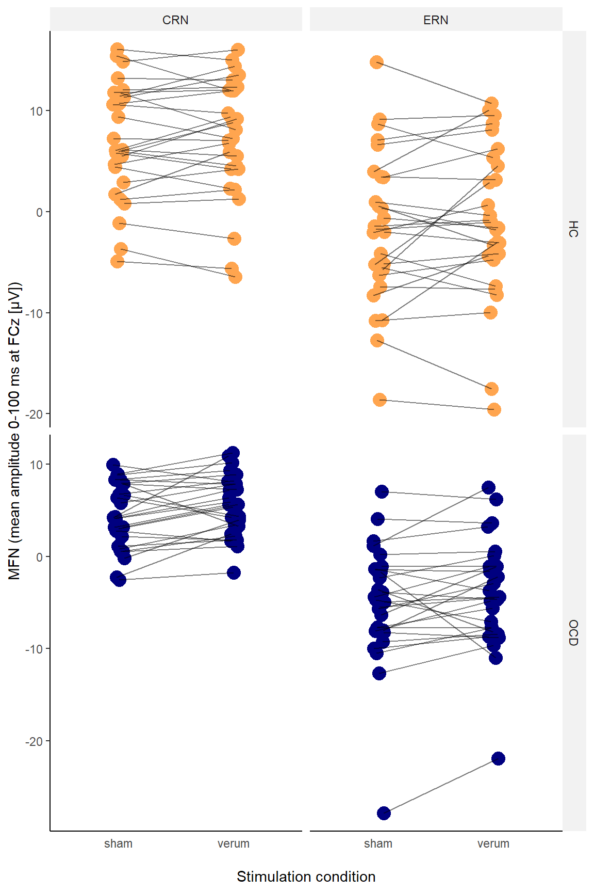

ERP Analysis
Data Cleaning
# Load data
load(file = "./data/Single_Trial_Data.rda")
load(file = "./data/Feedback_Infos.rda")
# Exclude P_02 (due to retainer) and C_02 (as preregistered: patients are excluded with their match)
single_trial_data <- single_trial_data[single_trial_data$participant_id != "P_02" & single_trial_data$participant_id != "C_02",]
feedback_infos <- feedback_infos[feedback_infos$participant_id != "P_02" & feedback_infos$participant_id != "C_02",]
# Exclude missing responses, RT outliers and trials with ERP artifacts
single_trial_data_clean <- single_trial_data %>%
dplyr::filter(
response_type != "miss" &
rt_invalid == FALSE &
!is.na(MFN_0_100_FCz)
) # (53093 of 53760 trials left)
# Add column for (grand mean standardized) number of errors (needed as covariate later) - this variable contains total number of errors, not only those entering analysis (preferred according to JK)
single_trial_data_clean <- single_trial_data %>%
dplyr::group_by(participant_id, session) %>%
dplyr::summarize(number_errors = sum(response_type == "incorrect")) %>%
dplyr::ungroup(.) %>%
dplyr::left_join(single_trial_data_clean, ., by = c("participant_id", "session"))
# Standardize this variable
single_trial_data_clean$number_errors_standardized <- scale(single_trial_data_clean$number_errors, center = TRUE, scale = TRUE)
# Add column for (grand mean standardized) number of speeding (needed as covariate later)
single_trial_data_clean <- feedback_infos[feedback_infos$block != 6,] %>%
dplyr::group_by(participant_id, session, feedback) %>%
dplyr::count(feedback, .drop = FALSE) %>%
dplyr::filter(feedback == " schneller") %>%
dplyr::rename(number_feedback_faster = n) %>%
dplyr::ungroup(.) %>%
dplyr::select(-feedback) %>%
dplyr::left_join(single_trial_data_clean, ., by = c("participant_id", "session"))
# Standardize this variable
single_trial_data_clean$number_feedback_faster_standardized <- scale(single_trial_data_clean$number_feedback_faster, center = TRUE, scale = TRUE)
# Add column for medication (needed as covariate later)
single_trial_data_clean <- single_trial_data_clean %>%
dplyr::mutate(medication = as.factor(ifelse(participant_id == "P_02" | participant_id == "P_04" | participant_id == "P_05" |
participant_id == "P_06" | participant_id == "P_08" | participant_id == "P_10" |
participant_id == "P_15" | participant_id == "P_16" | participant_id == "P_18" |
participant_id == "P_22" | participant_id == "P_25" | participant_id == "P_26" |
participant_id == "P_28" | participant_id == "P_30", "yes", "no")))
# Add column for (within-participant standardized) baseline EEG (needed as covariate later)
single_trial_data_clean <- single_trial_data_clean %>%
dplyr::group_by(participant_id, session) %>%
dplyr::mutate(
MFN_baseline_pre_200_0_FCz_standardized = scale(MFN_baseline_pre_200_0_FCz, center = TRUE, scale = TRUE),
Pe_baseline_pre_200_0_Pz_standardized = scale(Pe_baseline_pre_200_0_Pz, center = TRUE, scale = TRUE)) %>%
dplyr::ungroup()
# Calculate aggregated data per participant for boxplots, ANOVAs, t tests, and outlier detection
df_aggregated_per_subject_MFN <- single_trial_data_clean %>%
dplyr::group_by(participant_id, group, response_type, stimulation, session) %>%
dplyr::summarize(
MFN = mean(MFN_0_100_FCz, na.rm = TRUE)
) %>%
dplyr::ungroup()
# Calculate aggregated data per participant for ANOVA
df_aggregated_per_subject_ANOVA <- single_trial_data_clean %>%
dplyr::group_by(participant_id, group, stimulation, session) %>%
dplyr::summarize(
CRN_mean_amplitude_0_100_FCz = mean(MFN_0_100_FCz[response_type == "correct"], na.rm = TRUE),
ERN_mean_amplitude_0_100_FCz = mean(MFN_0_100_FCz[response_type == "incorrect"], na.rm = TRUE)
) %>%
dplyr::mutate(
difference_ERN_CRN_mean_amplitude_0_100_FCz = ERN_mean_amplitude_0_100_FCz - CRN_mean_amplitude_0_100_FCz
) %>%
dplyr::ungroup()
# Make categorical variables factors
single_trial_data_clean$participant_id <- as.factor(single_trial_data_clean$participant_id)
single_trial_data_clean$group <- as.factor(single_trial_data_clean$group)
single_trial_data_clean$session <- as.factor(single_trial_data_clean$session)
single_trial_data_clean$stimulation <- as.factor(single_trial_data_clean$stimulation)
single_trial_data_clean$stimulus_type <- as.factor(single_trial_data_clean$stimulus_type)
single_trial_data_clean$response_type <- as.factor(single_trial_data_clean$response_type)
# Load files with ERN quantified as area amplitude (replicating Reinhart & Woodman, 2014)
# Note that these files also contain P_02 and C_02 but these are dropped when joining with df_aggregated_per_subject_ANOVA
integral_area_amplitude <- read.table("./data/integral_area_amplitude_ERN_and_difference_ERN_CRN_-50_to_150_ms_at_FCz.txt", header = TRUE, stringsAsFactors = TRUE)
negative_area_amplitude <- read.table("./data/negative_area_amplitude_ERN_and_difference_ERN_CRN_-50_to_150_ms_at_FCz.txt", header = TRUE, stringsAsFactors = TRUE)
# Clean df for ERN quantified as area amplitude: Rename columns, create columns for merging, select relevant columns
df_aggregated_per_subject_ANOVA <- left_join(integral_area_amplitude, negative_area_amplitude, by = "ERPset") %>%
dplyr::rename(ERN_integral_area_amplitude_pre_50_150_FCz = bin2_incorrect__FCz.x,
difference_ERN_CRN_integral_area_amplitude_pre_50_150_FCz = bin10_difference_incorrect_._correct_FCz.x,
ERN_negative_area_amplitude_pre_50_150_FCz = bin2_incorrect__FCz.y,
difference_ERN_CRN_negative_area_amplitude_pre_50_150_FCz = bin10_difference_incorrect_._correct_FCz.y) %>%
dplyr::mutate(session = as.factor(ifelse(substr(ERPset, 6, 7) == "T1", "T1", "T2")),
participant_id = as.factor(substr(ERPset, 1, 4))) %>%
dplyr::select(c("participant_id", "session",
"ERN_integral_area_amplitude_pre_50_150_FCz", "difference_ERN_CRN_integral_area_amplitude_pre_50_150_FCz",
"ERN_negative_area_amplitude_pre_50_150_FCz", "difference_ERN_CRN_negative_area_amplitude_pre_50_150_FCz")) %>%
# Merge with df_aggregated_per_subject_ANOVA
dplyr::left_join(df_aggregated_per_subject_ANOVA, ., by = c("participant_id", "session"))Trials were excluded from all analyses if RT was shorter than 100 ms or longer than 800 ms or if the response in a trial was missing. We further discarded trials containing artifacts in the EEG, i.e., a voltage difference exceeding 50 μV between two consecutive sampling points or 200 μV within an epoch.
# Calculate percentage of excluded trials per group
excluded_trials_per_participant <- single_trial_data %>%
dplyr::group_by(group, participant_id, session) %>%
dplyr::summarize(
invalid_rt = sum(!is.na(rt_invalid) & rt_invalid != FALSE) / length(participant_id) * 100,
misses = sum(response_type == "miss") / length(participant_id) * 100,
EEG_artifact = sum(is.nan(MFN_0_100_FCz)) / length(participant_id) * 100 # is.nan -> trials lost due trigger miss have NA and thus do not count here
) %>%
dplyr::ungroup() %>%
dplyr::group_by(group) %>%
# Calculate M and SD of the variables
dplyr::summarize(across(-c(participant_id, session), list(mean,sd,min,max))) %>%
dplyr::ungroup()
# Display percentage of excluded trials per group
my_table_template(excluded_trials_per_participant,
caption = "Excluded Trials (M and SD in %) per Group",
col_names = c("Group", "M", "SD", "min", "max", "M", "SD", "min", "max", "M", "SD", "min", "max"),
header_above_config = c(" " = 1, "RT < 100 / > 800 ms" = 4, "Misses" = 4, "EEG artifact" = 4)
)
# Calculate percentage of excluded trials in total
excluded_trials_in_total <- single_trial_data %>%
dplyr::summarize(
invalid_rt = sum(!is.na(rt_invalid) & rt_invalid != FALSE) / nrow(single_trial_data) * 100,
misses = sum(response_type == "miss") / nrow(single_trial_data) * 100,
EEG_artifact = sum(is.nan(MFN_0_100_FCz)) / nrow(single_trial_data) * 100
)
# Display percentage of excluded trials in total
my_table_template(excluded_trials_in_total,
caption = "Excluded Trials (in %) in Total")
# Detect ERP outliers (ERP deviates more than 2/3 SD below/above group mean per condition)
ERP_outliers <- df_aggregated_per_subject_MFN %>%
dplyr::group_by(group, response_type, stimulation) %>%
dplyr::mutate(outlier_2_sd = case_when(abs(MFN - mean(MFN, na.rm = TRUE)) <= 2 * sd(MFN, na.rm = TRUE)~ FALSE, TRUE ~ TRUE),
outlier_3_sd = case_when(abs(MFN - mean(MFN, na.rm = TRUE)) <= 3 * sd(MFN, na.rm = TRUE)~ FALSE, TRUE ~ TRUE)) %>%
dplyr::filter(outlier_2_sd == TRUE) %>%
dplyr::ungroup()
# Display ERP outliers
my_table_template(ERP_outliers, caption = "ERP outliers (> 2/3 SD below/above group mean per condition (response type x stimulation))")| Group | M | SD | min | max | M | SD | min | max | M | SD | min | max |
|---|---|---|---|---|---|---|---|---|---|---|---|---|
| HC | 0.03 | 0.10 | 0 | 0.42 | 0.66 | 1.09 | 0 | 5.00 | 0.30 | 0.51 | 0 | 2.08 |
| OCD | 0.04 | 0.11 | 0 | 0.62 | 0.61 | 0.76 | 0 | 2.71 | 0.84 | 1.20 | 0 | 5.42 |
| invalid_rt | misses | EEG_artifact |
|---|---|---|
| 0.04 | 0.64 | 0.57 |
| participant_id | group | response_type | stimulation | session | MFN | outlier_2_sd | outlier_3_sd |
|---|---|---|---|---|---|---|---|
| C_10 | HC | incorrect | sham | T2 | 14.85 | TRUE | FALSE |
| C_11 | HC | correct | sham | T2 | -4.89 | TRUE | FALSE |
| C_11 | HC | correct | verum | T1 | -5.60 | TRUE | FALSE |
| C_11 | HC | incorrect | verum | T1 | -17.55 | TRUE | FALSE |
| C_18 | HC | incorrect | sham | T2 | -18.58 | TRUE | FALSE |
| C_18 | HC | incorrect | verum | T1 | -19.57 | TRUE | FALSE |
| C_21 | HC | correct | verum | T1 | -6.43 | TRUE | FALSE |
| P_17 | OCD | correct | verum | T1 | -1.75 | TRUE | FALSE |
| P_28 | OCD | incorrect | sham | T2 | -27.82 | TRUE | TRUE |
| P_28 | OCD | incorrect | verum | T1 | -21.87 | TRUE | TRUE |
There is one participant (P_28) whose ERN deviates > 3 SD from the group mean per condition (response type x stimulation). This participant is also quite prominent in the raincloud plot and line plot (see below). There are a few participants whose ERN deviates > 2 SD. I did not exclude participants based on this criterion. Being an outlier in ERP magnitude is also no exclusion criterion specified in the preregistration.
Data Inspection
Distribution
# Plot distribution MFN
hist_MFN <- ggplot(single_trial_data_clean, aes(x = MFN_0_100_FCz)) +
geom_histogram(aes(y = ..density..), color="gray33", fill = "#8ea6b4", size = 1) +
stat_function(fun = dnorm, args=list(mean = mean(single_trial_data_clean$MFN_0_100_FCz, na.rm = TRUE),
sd = sd(single_trial_data_clean$MFN_0_100_FCz, na.rm = TRUE)), color = "black", size = 0.5) +
geom_vline(aes(xintercept = mean(MFN_0_100_FCz, na.rm = TRUE)), color = "black", linetype = "dashed", size = 1) +
labs (title = "Histogram MFN", x = "MFN", y = "Density") +
my_figure_theme
qqplot_MFN <- ggplot(single_trial_data_clean, aes(sample = MFN_0_100_FCz)) +
stat_qq(color = "#8ea6b4") +
stat_qq_line() +
labs (title = "Q-Q-Plot MFN", x = "Theoretical Quantiles", y = "Sample Quantiles") +
my_figure_theme
# Plot distribution ERN
hist_ERN <- ggplot(single_trial_data_clean[single_trial_data_clean$response_type == "incorrect",], aes(x = MFN_0_100_FCz)) +
geom_histogram(aes(y = ..density..), color="gray33", fill = "#8ea6b4", size = 1) +
stat_function(fun = dnorm, args=list(mean = mean(single_trial_data_clean[single_trial_data_clean$response_type == "incorrect",]$MFN_0_100_FCz, na.rm = TRUE),
sd = sd(single_trial_data_clean[single_trial_data_clean$response_type == "incorrect",]$MFN_0_100_FCz, na.rm = TRUE)), color = "black", size = 0.5) +
geom_vline(aes(xintercept = mean(MFN_0_100_FCz, na.rm = TRUE)), color = "black", linetype = "dashed", size = 1) +
labs (title = "Histogram ERN", x = "ERN", y = "Density") +
my_figure_theme
qqplot_ERN <- ggplot(single_trial_data_clean[single_trial_data_clean$response_type == "incorrect",], aes(sample = MFN_0_100_FCz)) +
stat_qq(color = "#8ea6b4") +
stat_qq_line() +
labs (title = "Q-Q-Plot ERN", x = "Theoretical Quantiles", y = "Sample Quantiles") +
my_figure_theme
# Plot distribution CRN
hist_CRN <- ggplot(single_trial_data_clean[single_trial_data_clean$response_type == "correct",], aes(x = MFN_0_100_FCz)) +
geom_histogram(aes(y = ..density..), color="gray33", fill = "#8ea6b4", size = 1) +
stat_function(fun = dnorm, args=list(mean = mean(single_trial_data_clean[single_trial_data_clean$response_type == "correct",]$MFN_0_100_FCz, na.rm = TRUE),
sd = sd(single_trial_data_clean[single_trial_data_clean$response_type == "correct",]$MFN_0_100_FCz, na.rm = TRUE)), color = "black", size = 0.5) +
geom_vline(aes(xintercept = mean(MFN_0_100_FCz, na.rm = TRUE)), color = "black", linetype = "dashed", size = 1) +
labs (title = "Histogram CRN", x = "CRN", y = "Density") +
my_figure_theme
qqplot_CRN <- ggplot(single_trial_data_clean[single_trial_data_clean$response_type == "correct",], aes(sample = MFN_0_100_FCz)) +
stat_qq(color = "#8ea6b4") +
stat_qq_line() +
labs (title = "Q-Q-Plot CRN", x = "Theoretical Quantiles", y = "Sample Quantiles") +
my_figure_theme
ggdraw() +
draw_plot(hist_MFN, x = 0, y = .66, width = .5, height = .33) +
draw_plot(qqplot_MFN, x = .5, y = .66, width = .5, height = .33) +
draw_plot(hist_ERN, x = 0, y = .33, width = .5, height = .33) +
draw_plot(qqplot_ERN, x = .5, y = .33, width = .5, height = .33) +
draw_plot(hist_CRN, x = 0, y = 0, width = .5, height = .33) +
draw_plot(qqplot_CRN, x = .5, y = 0, width = .5, height = .33) 
ERN/CRN per participant
MFN_per_participant <- ggplot(single_trial_data_clean, aes(x = response_type, y = MFN_0_100_FCz, group = response_type)) +
geom_point(aes(fill = response_type), color = "black", shape = 21, position = "jitter") +
ggtitle("MFN per participant") +
my_figure_theme +
facet_wrap(~ participant_id + stimulation, ncol = 10) +
scale_fill_manual(values = my_figure_colors)
MFN_per_participant
Check Normality
For the single-trial data, Shapiro-Wilk is not suitable, as it always returns a significant result for such large samples (additionally, it can handle only samples up to 5000). Hence, we have to rely on visual inspection (see tab “Distribution”) and values of skewness and kurtosis (see below). Values for skewness and kurtosis between -2 and +2 are considered acceptable in order to prove normal univariate distribution (George & Mallery, 2010).
normality_MFN <- round(data.frame(matrix(c(skewness(single_trial_data_clean$MFN_0_100_FCz),
kurtosis(single_trial_data_clean$MFN_0_100_FCz),
skewness(single_trial_data_clean[single_trial_data_clean$response_type == "incorrect",]$MFN_0_100_FCz),
kurtosis(single_trial_data_clean[single_trial_data_clean$response_type == "incorrect",]$MFN_0_100_FCz),
skewness(single_trial_data_clean[single_trial_data_clean$response_type == "correct",]$MFN_0_100_FCz),
kurtosis(single_trial_data_clean[single_trial_data_clean$response_type == "correct",]$MFN_0_100_FCz)),
nrow=2, ncol = 3)),digits = 1)
rownames(normality_MFN) <- c("Skewness","Kurtosis")
colnames(normality_MFN) <- c("MFN", "ERN", "CRN")
my_table_template(normality_MFN, row_names = TRUE)| MFN | ERN | CRN | |
|---|---|---|---|
| Skewness | 0.0 | -0.1 | 0.1 |
| Kurtosis | 0.7 | 0.6 | 0.7 |
Determine transformation
LMM analysis of MFN/ERN/CRN will be conducted on untransformed values, as it seems that the assumption of normally distributed residuals will be met. The appropriate transformation was determined using the Box–Cox procedure (Box & Cox, 1964).
# Arrange plots
par(mfrow = c(1, 3))
# Determine transformation of MFN by estimating optimal lambda using Box–Cox procedure
bc_MFN <- boxcox(MFN_0_100_FCz + 100 ~ 1, data = single_trial_data_clean)
optlambda_MFN <- bc_MFN$x[which.max(bc_MFN$y)]
# Determine transformation of ERN by estimating optimal lambda using Box–Cox procedure
bc_ERN <- boxcox(MFN_0_100_FCz + 100 ~ 1, data = single_trial_data_clean[single_trial_data_clean$response_type == "incorrect",])
optlambda_ERN <- bc_ERN$x[which.max(bc_ERN$y)]
# Determine transformation of CRN by estimating optimal lambda using Box–Cox procedure
bc_CRN <- boxcox(MFN_0_100_FCz + 100 ~ 1, data = single_trial_data_clean[single_trial_data_clean$response_type == "correct",])
optlambda_CRN <- bc_CRN$x[which.max(bc_CRN$y)]
# Reset plot layout
par(mfrow = c(1, 1)) For MFN (left plot), the optimal lambda is 1.07, suggesting that no transformation (for lambda = 1) is needed. For ERN (middle plot), the optimal lambda is 1.23, suggesting that no transformation (for lambda = 1) is needed. For CRN (right plot), the optimal lambda is 0.95, suggesting that no transformation (for lambda = 1) is needed.
Split-half reliability
# Calculate permutation-based split-half internal consistency
# use ""invisible(capture.output())" to avoid having ugly console output in html
invisible(capture.output(split_half_reliability <- splithalf(data = single_trial_data_clean,
outcome = "RT",
score = "average",
permutations = 5000,
halftype = "random",
var.RT = "MFN_0_100_FCz",
var.trialnum = "trial",
var.participant = "participant_id",
var.condition = "response_type",
conditionlist = c("correct","incorrect"),
average = "mean")))
# Display permutation-based split-half internal consistency
my_table_template(split_half_reliability$final_estimates, caption = "Permutation-based split-half reliability")| condition | n | splithalf | 95_low | 95_high | spearmanbrown | SB_low | SB_high |
|---|---|---|---|---|---|---|---|
| correct | 56 | 0.99 | 0.99 | 0.99 | 1.00 | 0.99 | 1.00 |
| incorrect | 56 | 0.91 | 0.87 | 0.95 | 0.96 | 0.93 | 0.97 |
The internal consitency of ERN and CRN was estimated using a permutation-based split-half approach (Parsons 2020) with 5000 random splits. The (Spearman-Brown corrected) split-half internal consistency of ERN and CRN are excellent. The columns SB_low and SB_high represent 95% confience intervall limits. The spearman-brown corrected reliability estimate for the ERN was .96, 95% CI [.93, .97], for CRN 1, 95% CI [.99, 1]. The splithalf package was built to deal with RTs. However, the principle should also apply to ERP values, so the results should be correct. However, I also calculated the odd-even split-half reliabilty to compare the results (see below).
# Code odd and even trials for reliability
single_trial_data_clean$oddeven <- single_trial_data_clean$trial %% 2
# Calculate mean CRN for odd and even trials per participant and session
internal_consistency_CRN <- single_trial_data_clean[single_trial_data_clean$response_type == "correct",] %>%
dplyr::group_by(participant_id, session, oddeven) %>%
dplyr::summarise(mean_CRN = mean(MFN_0_100_FCz, na.rm=TRUE)
) %>%
dplyr::ungroup()
# Calculate mean ERN for odd and even trials per participant and session
internal_consistency_ERN <- single_trial_data_clean[single_trial_data_clean$response_type == "incorrect",] %>%
dplyr::group_by(participant_id, session, oddeven) %>%
dplyr::summarise(mean_ERN = mean(MFN_0_100_FCz, na.rm=TRUE)
) %>%
dplyr::ungroup()
# Correlating scores from even and odd items
r_CRN <- cor.test(internal_consistency_CRN$mean_CRN[internal_consistency_CRN$oddeven==1], internal_consistency_CRN$mean_CRN[internal_consistency_CRN$oddeven==0])
r_ERN <- cor.test(internal_consistency_ERN$mean_ERN[internal_consistency_ERN$oddeven==1], internal_consistency_ERN$mean_ERN[internal_consistency_ERN$oddeven==0])
# Adjusting with the Spearman-Brown prophecy formula
r_CRN_SB <- (2 * r_CRN$estimate) / (1 + r_CRN$estimate)
r_ERN_SB <- (2 * r_ERN$estimate) / (1 + r_ERN$estimate)
# Display odd-even split-half reliability
oddeven_split_half_reliability <- matrix(c(r_CRN$estimate, r_ERN$estimate, r_CRN$conf.int[1], r_ERN$conf.int[1],
r_CRN$conf.int[2], r_ERN$conf.int[2], r_CRN_SB, r_ERN_SB), ncol=4)
colnames(oddeven_split_half_reliability) <- c("splithalf_raw", "splithalf_CI_lower_limit", "splithalf_CI_upper_limit", "splithalf_spearmanbrown")
rownames(oddeven_split_half_reliability) <- c("CRN", "ERN")
my_table_template(oddeven_split_half_reliability, row_names = TRUE, caption = "Odd-even split-half reliability")| splithalf_raw | splithalf_CI_lower_limit | splithalf_CI_upper_limit | splithalf_spearmanbrown | |
|---|---|---|---|---|
| CRN | 0.98 | 0.98 | 0.99 | 0.99 |
| ERN | 0.79 | 0.71 | 0.85 | 0.88 |
Odd-even reliability for the ERN/CRN is also excellent.
Descriptive Statistics
Means and CIs
# Calculate descriptive statistics for MFN per condition
descriptive_statistics_MFN <- summarySEwithinO(
data = single_trial_data_clean,
measurevar = "MFN_0_100_FCz",
withinvars = c("response_type", "stimulation", "session"),
betweenvars = "group",
idvar = "participant_id",
conf.interval = .95) %>%
# Format confidence interval column
dplyr::mutate(
ci_MFN = paste0("[", round(MFN_0_100_FCz - ci, digits = 2),
", ", round(MFN_0_100_FCz + ci, digits = 2), "]")) %>%
# Round MFN means to two decimals
dplyr::mutate_at("MFN_0_100_FCz", round, digits = 2) %>%
# Select columns to be displayed
dplyr::select(c("group", "response_type", "stimulation", "session", "MFN_0_100_FCz", "ci_MFN", "ci"))
# Split and re-merge MFN table to display both groups next to each other
descriptive_statistics_MFN_display <- split(descriptive_statistics_MFN, descriptive_statistics_MFN$group)
descriptive_statistics_MFN_display <- left_join(descriptive_statistics_MFN_display$HC, descriptive_statistics_MFN_display$OCD,
by = c("response_type", "stimulation", "session"))
# Display descriptive statistics for MFN (and select columns)
my_table_template(descriptive_statistics_MFN_display[,c(2:6,9:10)],
caption = "MFN (in μV)",
col_names = c("Response type", "Stimulation", "Session", "M", "95% CI", "M", "95% CI"),
header_above_config = c(" " = 3, "HC" = 2, "OCD" = 2),
footnote_config = c(general = "Confidence intervals are adjusted for within-participant designs as described by Morey (2008).")
)
# Calcuate means and CIs adjusted for within-participant factors (without session) - for plots
descriptive_statistics_MFN_no_session <- summarySEwithinO(
data = single_trial_data_clean,
measurevar = "MFN_0_100_FCz",
withinvars = c("response_type", "stimulation"),
betweenvars = "group",
idvar = "participant_id",
conf.interval = .95
)| Response type | Stimulation | Session | M | 95% CI | M | 95% CI |
|---|---|---|---|---|---|---|
| correct | sham | T1 | 7.57 | [7.31, 7.83] | 4.30 | [4.07, 4.54] |
| correct | sham | T2 | 6.57 | [6.32, 6.82] | 4.45 | [4.18, 4.72] |
| correct | verum | T1 | 5.96 | [5.72, 6.21] | 4.65 | [4.37, 4.93] |
| correct | verum | T2 | 8.57 | [8.29, 8.86] | 6.22 | [5.99, 6.46] |
| incorrect | sham | T1 | -2.05 | [-3.08, -1.02] | -3.93 | [-4.97, -2.89] |
| incorrect | sham | T2 | -0.58 | [-1.74, 0.58] | -3.69 | [-4.96, -2.42] |
| incorrect | verum | T1 | -0.18 | [-1.31, 0.95] | -4.31 | [-5.59, -3.02] |
| incorrect | verum | T2 | -0.25 | [-1.4, 0.89] | -2.96 | [-3.99, -1.93] |
| Note: | ||||||
| Confidence intervals are adjusted for within-participant designs as described by Morey (2008). |
Raincloud plot
# Define facet labels
response_type.labs <- c("CRN", "ERN")
names(response_type.labs) <- c("correct", "incorrect")
# From JB: "Raincloud plots (Allen et al., 2019) show means and 95% CIs calculated with the summarySEwithin function (Morey, 2008) on single trial data, and points, and distributions for data aggregated by subject"
# Create raincloud plot MFN
plot_MFN_raincloud <- ggplot() +
# Add aggregated distribution, boxplot and data points
geom_flat_violin(data = df_aggregated_per_subject_MFN, aes(x = stimulation, y = MFN, fill = group), position = position_nudge(x = .1, y = 0),
adjust = 1.5, trim = FALSE, alpha = .5, colour = NA)+
geom_point(data = df_aggregated_per_subject_MFN, aes(x = as.numeric(stimulation)-.15, y = MFN, colour = group),
position = position_jitter(width = .05), size = 1, shape = 20)+
geom_boxplot(data = df_aggregated_per_subject_MFN, aes(x = stimulation, y = MFN, fill = group),
outlier.shape = NA, alpha = .5, width = .1, colour = "black")+
# Add single-trial mean + CI
geom_point(data = descriptive_statistics_MFN_no_session, aes(x = as.numeric(stimulation)+0.1, y = MFN_0_100_FCz, colour = group),
shape = 95, size = 6) +
geom_errorbar(data = descriptive_statistics_MFN_no_session, aes(x = as.numeric(stimulation)+0.1, ymax = MFN_0_100_FCz + ci, ymin = MFN_0_100_FCz - ci),
colour = "black", width = 0) +
# Add style
scale_colour_manual(values = my_figure_colors, name = "Group:") +
scale_fill_manual(values = my_figure_colors, name = "Group:") +
facet_wrap(~response_type,labeller = labeller(response_type = response_type.labs)) +
labs(x = "\nStimulation condition", y = "MFN (mean amplitude 0-100 ms at FCz [μV])") +
my_figure_theme
# Save plot
ggsave("./figures/figure_MFN_raincloud.tiff", width = 20, height = 25, units = "cm", dpi=600, compression = "lzw")
# Display plot
plot_MFN_raincloud
Note. Response-locked ERP (ERN, CRN; 0-100 ms at FCz) in the flanker task is shown as a function of response type, stimulation condition, and group. Means and 95% confidence intervals (= lines at violin plot bottom) were calculated based on single-trial data. Boxplots and violin plots are based on data aggregated by participant. CIs are adjusted for within-participant designs as described by Morey (2008).
Line plot participant-wise
# Define facet labels
response_type.labs <- c("CRN", "ERN")
names(response_type.labs) <- c("correct", "incorrect")
# Create line plot MFN
plot_MFN_lines <- ggplot(df_aggregated_per_subject_MFN, aes(x=stimulation, y=MFN, group=participant_id)) +
geom_point(aes(colour=group), size=4.5, position=position_dodge(width=0.1)) +
geom_line(size=0.5, alpha=0.5, position=position_dodge(width=0.1)) +
# Add style
scale_colour_manual(values = my_figure_colors, guide=FALSE) +
facet_grid(cols = vars(response_type), rows = vars(group), scales = "free",labeller = labeller(response_type = response_type.labs))+
labs(x = "\nStimulation condition", y = "MFN (mean amplitude 0-100 ms at FCz [μV])") +
my_figure_theme
# Save plot
ggsave("./figures/figure_MFN_lines.tiff", width = 13, height = 18, units = "cm", dpi=600, compression = "lzw")
# Display plot
plot_MFN_lines
How many participants show the verum < sham stimulation effect on ERN/CRN?
# Split and re-merge aggregated table to display both stimulation conditions next to each other
count_stimulation_effect <- split(df_aggregated_per_subject_MFN, df_aggregated_per_subject_MFN$stimulation)
count_stimulation_effect <- left_join(count_stimulation_effect$sham, count_stimulation_effect$verum, by = c("participant_id", "response_type", "group"))
# Make table how many participants show the verum < sham stimulation effect on ERN/CRN
count_stimulation_effect <- count_stimulation_effect %>%
dplyr::group_by(response_type, group) %>%
subset(MFN.x < MFN.y) %>% # MFN.x is sham, MFN.y is verum (but ERN is neg, so we need < sign)
dplyr::summarise(n = n(), .groups = 'drop')
# Display table
my_table_template(count_stimulation_effect)| response_type | group | n |
|---|---|---|
| correct | HC | 14 |
| correct | OCD | 20 |
| incorrect | HC | 15 |
| incorrect | OCD | 19 |
Plot without session
# Create plot MFN
plot_MFN <- ggplot() +
geom_boxplot(data = df_aggregated_per_subject_MFN, aes(x = stimulation, y = MFN, fill = group), outlier.size =0.3)+
geom_point(data = descriptive_statistics_MFN_no_session, aes(x = stimulation, y = MFN_0_100_FCz, colour = group),
position = position_dodge(width = 0.7), shape = 15, size = 1) +
geom_errorbar(data = descriptive_statistics_MFN_no_session, aes(x = stimulation, ymax = MFN_0_100_FCz + ci, ymin = MFN_0_100_FCz - ci, colour = group),
position = position_dodge(width = 0.7), width = 0, size = 0.5) +
geom_line(data = descriptive_statistics_MFN_no_session, aes(x = stimulation, y = MFN_0_100_FCz, group = group, color = group),
position = position_dodge(width = 0.7), linetype = 3, size = 0.5) +
scale_colour_manual(values = c("#b23f00", "#ff9b64"), name = "Group:") +
scale_fill_manual(values = my_figure_colors, name = "Group:") +
facet_wrap(~response_type, nrow = 1) +
my_figure_theme +
labs(x = "\nStimulation condition", y = "MFN (mean amplitude 0-100 ms at FCz [μV])")
# Save plot
ggsave("./figures/figure_MFN.tiff", width = 12, height = 12, units = "cm", dpi=600, compression = "lzw")
# Display plot
plot_MFNNote. Response-locked ERP (ERN, CRN; 0-100 ms at FCz) in the flanker task is shown as a function of response type, stimulation condition, and group. Means and 95% confidence intervals (shown in orange/red) were calculated based on single-trial data. Boxplots are based on data aggregated by participant. CIs are adjusted for within-participant designs as described by Morey (2008).
Plot with session
# Create plot MFN
plot_MFN_session <- ggplot() +
geom_boxplot(data = df_aggregated_per_subject_MFN, aes(x = stimulation, y = MFN, fill = group), outlier.size =0.3)+
geom_point(data = descriptive_statistics_MFN, aes(x = stimulation, y = MFN_0_100_FCz, colour = group),
position = position_dodge(width = 0.7), shape = 15, size = 1) +
geom_errorbar(data = descriptive_statistics_MFN, aes(x = stimulation, ymax = MFN_0_100_FCz + ci, ymin = MFN_0_100_FCz - ci, colour = group),
position = position_dodge(width = 0.7), width = 0, size = 0.5) +
geom_line(data = descriptive_statistics_MFN, aes(x = stimulation, y = MFN_0_100_FCz, group = group, color = group),
position = position_dodge(width = 0.7), linetype = 3, size = 0.5) +
scale_colour_manual(values = c("#b23f00", "#ff9b64"), name = "Group:") +
scale_fill_manual(values = my_figure_colors, name = "Group:") +
facet_wrap(~response_type + session, nrow = 1) +
my_figure_theme +
labs(x = "\nStimulation condition", y = "MFN (mean amplitude 0-100 ms at FCz [μV])")
# Save plot
ggsave("./figures/figure_MFN_session.tiff", width = 20, height = 25, units = "cm", dpi=600, compression = "lzw")
# Display plot
plot_MFN_session
Note. Response-locked ERP (ERN, CRN; 0-100 ms at FCz) in the flanker task is shown as a function of response type, stimulation condition, group, and session. Means and 95% confidence intervals (shown in orange/red) were calculated based on single-trial data. Boxplots are based on data aggregated by participant. CIs are adjusted for within-participant designs as described by Morey (2008).
LMM Analyses
MFN/ERN/CRN were modeled using a linear mixed-effects models (LMMs).
Fixed effects
Group (HC, OCD), stimulation (verum, sham), and response type (correct, incorrect) were specified as fixed factors. Fixed effects were coded using effect coding (this equals sliding difference contrasts for two levels for factors with two levels or sum coding/2), such that the intercept reflects the grand mean across all conditions and differences in means between factor levels are tested. Fixed effects were not eliminated using model comparison techniques because they correspond to the original experimental design and a priori hypotheses.
Random effects
Participants were specified as random factors. The random-effects structure for each model was determined based on the procedure proposed by Bates, Kliegl, et al. (2015). We started with the maximal random-effects structure that was justified by the design, including random intercepts for participants, as well as random slopes for all main effects and interactions specified as fixed effects. If the model with the maximal random-effects structure would not converge, correlations of the random terms were set to zero. We performed a principal components analysis on the random-effects variance–covariance estimates to determine the number of components supported by the data and removed random effects explaining zero variance to prevent overparametrization (Matuschek et al., 2017).
# Define contrasts (sliding difference contrasts)
contrasts(single_trial_data_clean$stimulation) <- contr.sdif(2)
contrasts(single_trial_data_clean$group) <- contr.sdif(2)
contrasts(single_trial_data_clean$response_type) <- contr.sdif(2)
contrasts(single_trial_data_clean$session) <- contr.sdif(2)
contrasts(single_trial_data_clean$stimulus_type) <- contr.sdif(2)
contrasts(single_trial_data_clean$medication) <- contr.sdif(2)
# Add contrasts as numerical covariates via model matrix* (specify all possible contasts for now)
model_matrix <- model.matrix(~ stimulation * group * response_type, single_trial_data_clean)
# Attach the model matrix (8 columns) to the dataframe
single_trial_data_clean[, (ncol(single_trial_data_clean) + 1):(ncol(single_trial_data_clean) + 8)] <- model_matrix
# Assign descriptive names to the contrasts
names(single_trial_data_clean)[(ncol(single_trial_data_clean) - 7):ncol(single_trial_data_clean)] <- c("Grand Mean", "verum_sham", "OCD_HC", "incorrect_correct", "verum_sham:OCD_HC", "verum_sham:incorrect_correct", "OCD_HC:incorrect_correct", "verum_sham:OCD_HC:incorrect_correct")
# *Note: For the random effects, we needed to enter the separate random effect terms in the models to enable
# double-bar notation (||). This allows fitting a model that sets correlations of the random terms to zero.LMM for MFN
Model
This is the overall model, including error and correct trials. This model will be reported before reporting the separate models for ERN and CRN, because it also shows the overall group effect and stimulation effect.
# Run model with maximal random-effects structure
LMM_MFN <- lmer(MFN_0_100_FCz ~ verum_sham * OCD_HC * incorrect_correct +
(1 + verum_sham + incorrect_correct + verum_sham:incorrect_correct | participant_id),
data = single_trial_data_clean,
REML = TRUE,
control = lmerControl(optimizer = "bobyqa")
)
# Check model output
# summary(LMM_MFN) # Model does converge
# isSingular(LMM_MFN) # Check for singular model fit (i.e., dimensions of the variance-covariance matrix have been estimated as exactly zero): FALSE
# Check PCA of random-effects variance-covariance estimates
# summary(rePCA(LMM_MFN)) # All terms explain variance (> 0.5%)
# Display results (fixed effects)
tab_model(LMM_MFN,
dv.labels = "MFN [μV]", show.stat = TRUE, show.icc = TRUE, show.r2 = TRUE,
show.re.var = TRUE, show.ngroups = TRUE, string.est = "b", string.stat = "t value",
string.ci = "95 % CI", string.p = "p value", p.val = "satterthwaite", wrap.labels = 80, digits.re = 3
)| MFN [µV] | ||||
|---|---|---|---|---|
| Predictors | b | 95 % CI | t value | p value |
| (Intercept) | 1.57 | 0.25 – 2.88 | 2.33 | 0.023 |
| verum_sham | 0.70 | 0.12 – 1.28 | 2.37 | 0.022 |
| OCD_HC | -2.64 | -5.27 – -0.01 | -1.97 | 0.054 |
| incorrect_correct | -8.96 | -10.32 – -7.60 | -12.90 | <0.001 |
| verum_sham * OCD_HC | 0.52 | -0.64 – 1.68 | 0.88 | 0.383 |
| verum_sham * incorrect_correct | 0.10 | -0.81 – 1.01 | 0.22 | 0.830 |
| OCD_HC * incorrect_correct | -0.88 | -3.60 – 1.84 | -0.63 | 0.528 |
| (verum_sham * OCD_HC) * incorrect_correct | -0.88 | -2.69 – 0.94 | -0.95 | 0.349 |
| Random Effects | ||||
| σ2 | 92.127 | |||
| τ00 participant_id | 24.759 | |||
| τ11 participant_id.verum_sham | 3.079 | |||
| τ11 participant_id.incorrect_correct | 25.082 | |||
| τ11 participant_id.verum_sham:incorrect_correct | 4.770 | |||
| ρ01 | 0.129 | |||
| 0.401 | ||||
| 0.058 | ||||
| ICC | 0.203 | |||
| N participant_id | 56 | |||
| Observations | 53093 | |||
| Marginal R2 / Conditional R2 | 0.049 / 0.241 | |||
There is a main effect of stimulation and response type and a trend for group.
Assumption checks
# Check model assumptions
performance::check_model(LMM_MFN, panel = TRUE)
# In addition to plots, print verbal output for some assumption tests to facilitate conclusion
print("# Check for heteroscedasticity")
performance::check_heteroscedasticity(LMM_MFN)
print("# Check for influential observations (Cook's distance)")
performance::check_outliers(LMM_MFN, effects = "random")
print("# Check for normal distributed random effects")
performance::check_normality(LMM_MFN, effects = "random")[1] "# Check for heteroscedasticity"
Warning: Heteroscedasticity (non-constant error variance) detected (p = 0.000).
[1] "# Check for influential observations (Cook's distance)"
OK: No outliers detected.
[1] "# Check for normal distributed random effects"
Group: participant_id
(Intercept) OK: random effects appear as normally distributed (p = 0.162).
verum_sham OK: random effects appear as normally distributed (p = 0.591).
incorrect_correct Warning: Non-normality of random effects detected (p = 0.002).
verum_sham:incorrect_correct Warning: Non-normality of random effects detected (p = 0.009).- Assumption 1: Independence of Data Points / Absence of collinearity -> Is OK
- Are predictors not highly correlated?
- Multicollinearity plot shows only low correlations
- Assumption 2: Normality of Residuals -> Is Not OK???
- Are residuals approximately normally distributed?
- Q-Q plot and density plot look not so great; Q-Q plot quite a bit off at the extremes
- It is debated whether this is problematic at all; and violation does not seem so bad, so maybe not worry about it?
- Assumption 3: Linearity -> Is OK
- Is the dependent variable linearly related to the fixed factors, random factors, and covariates?
- Plot of the residuals against the fitted values shows a random scatter pattern, no nonlinear or curvy pattern
- Assumption 4: Homogeneity of Residual Variance (Heteroscedasticity) -> Is OK???
- Have residuals constant variance across the range of the predicted values?
- Plot of the residuals against the fitted values shows an even spread around the centered line; but written output says this is not ok
- Assumption 5: Absence of Influential Data Points -> Is OK
- Are there are no influential values?
- Cook’s distance plot looks fine (for large N, Cook’s distances should be below 1) and written output says there are no outliers
- Assumption 6: Normality of Random Effects -> Is OK
- Are random effects approximately normally distributed?
- Written output says this is (mostly) ok
LMM for ERN / CRN
Model
# ERN
LMM_ERN <- lmer(MFN_0_100_FCz ~ verum_sham * OCD_HC +
(1 + verum_sham | participant_id),
data = single_trial_data_clean[single_trial_data_clean$response_type == "incorrect",],
REML = TRUE,
control = lmerControl(optimizer = "bobyqa")
)
# Check model output
# summary(LMM_ERN) # Model does converge
# isSingular(LMM_ERN) # Check for singular model fit (i.e., dimensions of the variance-covariance matrix have been estimated as exactly zero): FALSE
# Check PCA of random-effects variance-covariance estimates
# summary(rePCA(LMM_ERN)) # All terms explain variance (> 0.5%)
# CRN
LMM_CRN <- lmer(MFN_0_100_FCz ~ verum_sham * OCD_HC +
(1 + verum_sham | participant_id),
data = single_trial_data_clean[single_trial_data_clean$response_type == "correct",],
REML = TRUE,
control = lmerControl(optimizer = "bobyqa")
)
# Check model output
# summary(LMM_CRN) # Model does converge
# isSingular(LMM_CRN) # Check for singular model fit (i.e., dimensions of the variance-covariance matrix have been estimated as exactly zero): FALSE
# Check PCA of random-effects variance-covariance estimates
# summary(rePCA(LMM_CRN)) # All terms explain variance
# Display models in one table
tab_model(LMM_ERN, LMM_CRN,
dv.labels = c("ERN [μV]", "CRN [μV]"), show.stat = TRUE, show.icc = TRUE, show.r2 = TRUE,
show.re.var = TRUE, show.ngroups = TRUE, string.est = "b", string.stat = "t value",
string.ci = "95 % CI", string.p = "p value", p.val = "satterthwaite", wrap.labels = 80, digits.re = 3
)| ERN [µV] | CRN [µV] | |||||||
|---|---|---|---|---|---|---|---|---|
| Predictors | b | 95 % CI | t value | p value | b | 95 % CI | t value | p value |
| (Intercept) | -2.88 | -4.60 – -1.16 | -3.29 | 0.002 | 6.05 | 4.84 – 7.25 | 9.84 | <0.001 |
| verum_sham | 0.86 | 0.02 – 1.70 | 2.00 | 0.052 | 0.65 | 0.06 – 1.24 | 2.18 | 0.034 |
| OCD_HC | -3.14 | -6.58 – 0.30 | -1.79 | 0.079 | -2.20 | -4.61 – 0.21 | -1.79 | 0.079 |
| verum_sham * OCD_HC | -0.10 | -1.78 – 1.59 | -0.11 | 0.911 | 0.96 | -0.21 – 2.13 | 1.60 | 0.114 |
| Random Effects | ||||||||
| σ2 | 98.589 | 91.725 | ||||||
| τ00 | 41.142 participant_id | 21.048 participant_id | ||||||
| τ11 | 2.955 participant_id.verum_sham | 4.587 participant_id.verum_sham | ||||||
| ρ01 | -0.102 participant_id | 0.043 participant_id | ||||||
| ICC | 0.298 | 0.195 | ||||||
| N | 56 participant_id | 56 participant_id | ||||||
| Observations | 3244 | 49849 | ||||||
| Marginal R2 / Conditional R2 | 0.018 / 0.311 | 0.012 / 0.204 | ||||||
There is a trend for a higher ERN in OCD compared to HC. There also is a trend for a higher CRN in OCD compared to HC. For CRN, there is an effect of stimulation, with smaller (i.e., less negative) CRN in the verum stimulation compared to the sham condition. There is a trend for a stimulation effect on ERN (which turns significant when using maximum likelihood instead of REML estimation).
Reinhart and Woodman (2014) found no stimulation effect on CRN. But from their Figure 2, I actually had the impression that the cathodal stimulation seems to rather increase the CRN (more neg), and a little bit reduces ERN. Maybe that their finding of a stimulation effect on the ERN (which was quantified as difference ERN-CRN) might be caused to a great deal by the effect on CRN? But possibly this stimulation effect was not significant when analyzing the CRN or ERN alone. In our data, the stimulation also reduces the CRN, which is probably why I see no effect in the difference ERN-CRN quantification as Reinhart & Woodman did (see ANOVA section).
Assumption checks ERN
# ERN check model assumptions
performance::check_model(LMM_ERN, panel = TRUE)
# In addition to plots, print verbal output for some assumption tests to facilitate conclusion
print("# Check for heteroscedasticity")
performance::check_heteroscedasticity(LMM_ERN)
print("# Check for influential observations (Cook's distance)")
performance::check_outliers(LMM_ERN, effects = "random")
print("# Check for normal distributed random effects")
performance::check_normality(LMM_ERN, effects = "random")[1] "# Check for heteroscedasticity"
Warning: Heteroscedasticity (non-constant error variance) detected (p = 0.000).
[1] "# Check for influential observations (Cook's distance)"
OK: No outliers detected.
[1] "# Check for normal distributed random effects"
Group: participant_id
(Intercept) Warning: Non-normality of random effects detected (p = 0.037).
verum_sham OK: random effects appear as normally distributed (p = 0.628).Notes for assumption check would be the same as written for the MFN model.
Assumption checks CRN
# CRN check model assumptions
performance::check_model(LMM_CRN, panel = TRUE)
# In addition to plots, print verbal output for some assumption tests to facilitate conclusion
print("# Check for heteroscedasticity")
performance::check_heteroscedasticity(LMM_CRN)
print("# Check for influential observations (Cook's distance)")
performance::check_outliers(LMM_CRN, effects = "random")
print("# Check for normal distributed random effects")
performance::check_normality(LMM_CRN, effects = "random")[1] "# Check for heteroscedasticity"
Warning: Heteroscedasticity (non-constant error variance) detected (p = 0.000).
[1] "# Check for influential observations (Cook's distance)"
OK: No outliers detected.
[1] "# Check for normal distributed random effects"
Group: participant_id
(Intercept) OK: random effects appear as normally distributed (p = 0.180).
verum_sham OK: random effects appear as normally distributed (p = 0.997).Notes for assumption check would be the same as written for the MFN model.
Equivalence Test: ERN
# Equivalence bounds (refers to difference in raw values of 1 microvolt, not standardized differences in means)
bound_l <- -1 # lower equivalence bound
bound_u <- 1 # upper equivalence bound (the more positive this number, the less negative verum ERN compared to sham ERN) - this is the boundary of interest
# Use the contest1D functions of the lmerTest package to perform tests centered on the lower and upper equivalence bound, using the rhs option
lower <- contest1D(LMM_ERN, c(0, 1, 0, 0), confint = TRUE, rhs = bound_l) # get t value for test against lower bound
upper <- contest1D(LMM_ERN, c(0, 1, 0, 0), confint = TRUE, rhs = bound_u) # get t value for test against upper bound
# Note: c(0,1,0,0) means test for stimulation effect (= second fixed effect), as can be seen with fixef(LMM_ERN)
# Recalculate the required one-sided tests from the t-values (test provided by contest1D is two-sided)
p_lower <- pt(lower$`t value`, lower$df, lower.tail = FALSE) # test against lower bound
p_upper <- pt(upper$`t value`, upper$df, lower.tail = TRUE) # test against upper bound
# ALTERNATIVE: Divide the p-values provided by contest1D by 2, because one-sided tests are required but contest1D provides two-sided test
# p_lower <- lower$`Pr(>|t|)`/2
# p_upper <- upper$`Pr(>|t|)`/2Equivalence testing: two one-sided tests (TOST) procedure to test for equivalence and reject the presence of a smallest effect size of interest (SESOI)
Statistically equivalent: difference between groups is smaller than what is considered meaningful and statistically falls within the interval indicated by the equivalence bounds
Test against lower bound: t(44.18) = 4.33, p = 0.00004
Test against upper bound: t(44.18) = -0.33, p = 0.371
Since the test against the upper bound is not significant, we cannot reject that the true value is not equal to or more extreme than the upper equivalence bound (i.e., we cannot reject that the verum ERN is at least 1 microvolt less negative than the sham ERN), which means that we did not obtain an equivalent result.
The ERN amplitude in the sham vs. verum condition is not statistically equivalent and not statistically different (or trend only)
“Based on equivalence bounds (= smalles effect size of interest, SESOI) of -1.0 microvolt and 1.0 microvolt for the stimulation effect on the ERN quantified as mean amplitude from 0 to 100 ms at FCz, we cannot reject effect sizes that we still consider meaningful, t(44.18) = −0.33, p = .371. Because the effect was also not statistically different from 0 in a traditional null-hypothesis test, the result is inconclusive. We can neither conclude that the effect is different from zero, nor that the effect is too small to matter. We need to collect more data to draw conclusions about the presence of an effect, or the absence of a meaningful effect (or both).”
citation: Improving Inferences About Null Effects With Bayes Factors and Equivalence Tests (Lakens et al., 2020)
Is this SESOI justified? Wy do we consider changes of at least 1 (or 1.5°) microvolt as meaningful and below as not meaningful? E.g. can it be based on the fact that 1 microvolt ERN reduction in OCD would lead to comparable ERN magnitude in OCD and HC? Does an ERN change of 1 microvolt predict something meaningful? The effect is considerably smalller than the one reported by Reinhart & Woodman (2014) and much smaller than reported ERN modification effects by Klawohn et al. (2015°°; 2020).
°would still lead to the same conclusion °° also used mean amplitude
Check covariates
The purpose of including the covariates was to see how the effects change when controlling for the overall effect of the covariate. Thus, covariates were included only as fixed factor, not as random term. I first included the covariates as main effect only, not allowing any interactions with stimulation or group. However, inspecting the interactions as well might lead to new, important insights. These models including the interactions are presented below. Note: The covariate number of errors refers to the actual number of errors committed by each participant, not the number included in the analyses. Continuous predictors were grand mean standardized (number of errors, number of feedback faster) or within-participant standardized (baseline EEG).
From Frömer et al. (2020; “When effort matters…”): “For each ERP, we regressed out the baseline activity at the same electrode sites (Alday et al., 2019). This approach accounts for variability prior to the effect of interest that can otherwise induce spurious effects due to noise or spill-over from previous stages of the trial. Although noise in the baseline is assumed to average to zero (across time points, as well as trials) when using traditional ERP-averaging approaches, this assumption does not necessarily hold for single-trial analyses, where a non-stationary baseline or unevenly distributed noise can easily lead to systematic biases in the subsequent time-series. To address these potential spurious effects, we follow recommendations to include the baseline as a nuisance regressor (Alday et al., 2019).”
# ERN check covariate baseline EEG
LMM_ERN_baseline_EEG <- lmer(MFN_0_100_FCz ~ verum_sham * OCD_HC * MFN_baseline_pre_200_0_FCz_standardized +
(1 + verum_sham | participant_id),
data = single_trial_data_clean[single_trial_data_clean$response_type == "incorrect",],
REML = TRUE,
control = lmerControl(optimizer = "bobyqa")
) # Convergence, singulatrity, PCA checked, all ok
# CRN check covariate baseline EEG
LMM_CRN_baseline_EEG <- lmer(MFN_0_100_FCz ~ verum_sham * OCD_HC * MFN_baseline_pre_200_0_FCz_standardized +
(1 + verum_sham | participant_id),
data = single_trial_data_clean[single_trial_data_clean$response_type == "correct",],
REML = TRUE,
control = lmerControl(optimizer = "bobyqa")
) # Convergence, singulatrity, PCA checked, all ok
# Display models in one table
tab_model(LMM_ERN_baseline_EEG, LMM_CRN_baseline_EEG,
dv.labels = c("ERN [μV], covariate baseline EEG", "CRN [μV], covariate baseline EEG"), show.stat = TRUE, show.icc = TRUE, show.r2 = TRUE,
show.re.var = FALSE, show.ngroups = TRUE, string.est = "b", string.stat = "t value",
string.ci = "95 % CI", string.p = "p value", p.val = "satterthwaite", wrap.labels = 30, digits.re = 3
)
# ERN check covariate session
LMM_ERN_session <- lmer(MFN_0_100_FCz ~ verum_sham * OCD_HC * session +
(1 + verum_sham | participant_id),
data = single_trial_data_clean[single_trial_data_clean$response_type == "incorrect",],
REML = TRUE,
control = lmerControl(optimizer = "bobyqa")
) # Convergence, singulatrity, PCA checked, all ok
# CRN check covariate session
LMM_CRN_session <- lmer(MFN_0_100_FCz ~ verum_sham * OCD_HC * session +
(1 + verum_sham | participant_id),
data = single_trial_data_clean[single_trial_data_clean$response_type == "correct",],
REML = TRUE,
control = lmerControl(optimizer = "bobyqa")
) # Convergence, singulatrity, PCA checked, all ok
# Display models in one table
tab_model(LMM_ERN_session, LMM_CRN_session,
dv.labels = c("ERN [μV], covariate session","CRN [μV], covariate session"), show.stat = TRUE, show.icc = TRUE, show.r2 = TRUE,
show.re.var = FALSE, show.ngroups = TRUE, string.est = "b", string.stat = "t value",
string.ci = "95 % CI", string.p = "p value", p.val = "satterthwaite", wrap.labels = 30, digits.re = 3
)
# ERN check covariate number of errors (predictor was z standardized)
LMM_ERN_number_errors <- lmer(MFN_0_100_FCz ~ verum_sham * OCD_HC * number_errors_standardized +
(1 + verum_sham | participant_id),
data = single_trial_data_clean[single_trial_data_clean$response_type == "incorrect",],
REML = TRUE,
control = lmerControl(optimizer = "bobyqa")
) # Convergence, singulatrity, PCA checked, all ok
# CRN check covariate number of errors (predictor was z standardized)
LMM_CRN_number_errors <- lmer(MFN_0_100_FCz ~ verum_sham * OCD_HC * number_errors_standardized +
(1 + verum_sham | participant_id),
data = single_trial_data_clean[single_trial_data_clean$response_type == "correct",],
REML = TRUE,
control = lmerControl(optimizer = "bobyqa")
) # Convergence, singulatrity, PCA checked, all ok
# Display models in one table
tab_model(LMM_ERN_number_errors, LMM_CRN_number_errors,
dv.labels = c("ERN [μV], covariate number of errors","CRN [μV], covariate number of errors"), show.stat = TRUE, show.icc = TRUE, show.r2 = TRUE,
show.re.var = FALSE, show.ngroups = TRUE, string.est = "b", string.stat = "t value",
string.ci = "95 % CI", string.p = "p value", p.val = "satterthwaite", wrap.labels = 30, digits.re = 3
)
# ERN check covariate number of feedback faster (predictor was z standardized)
LMM_ERN_number_feedback_faster <- lmer(MFN_0_100_FCz ~ verum_sham * OCD_HC * number_feedback_faster_standardized +
(1 + verum_sham | participant_id),
data = single_trial_data_clean[single_trial_data_clean$response_type == "incorrect",],
REML = TRUE,
control = lmerControl(optimizer = "bobyqa")
) # Convergence, singulatrity, PCA checked, all ok
# CRN check covariate number of feedback faster (predictor was z standardized)
LMM_CRN_number_feedback_faster <- lmer(MFN_0_100_FCz ~ verum_sham * OCD_HC * number_feedback_faster_standardized +
(1 + verum_sham | participant_id),
data = single_trial_data_clean[single_trial_data_clean$response_type == "correct",],
REML = TRUE,
control = lmerControl(optimizer = "bobyqa")
) # Convergence, singulatrity, PCA checked, all ok
# Display models in one table
tab_model(LMM_ERN_number_feedback_faster, LMM_CRN_number_feedback_faster,
dv.labels = c("ERN [μV], covariate number of feedback faster","CRN [μV], covariate number of feedback faster"), show.stat = TRUE, show.icc = TRUE, show.r2 = TRUE,
show.re.var = FALSE, show.ngroups = TRUE, string.est = "b", string.stat = "t value",
string.ci = "95 % CI", string.p = "p value", p.val = "satterthwaite", wrap.labels = 30, digits.re = 3
)
# ERN check covariate stimulus type
LMM_ERN_stimulus_type <- lmer(MFN_0_100_FCz ~ verum_sham * OCD_HC * stimulus_type +
(1 + verum_sham | participant_id),
data = single_trial_data_clean[single_trial_data_clean$response_type == "incorrect",],
REML = TRUE,
control = lmerControl(optimizer = "bobyqa")
) # Convergence, singulatrity, PCA checked, all ok
# CRN check covariate stimulus_type
LMM_CRN_stimulus_type <- lmer(MFN_0_100_FCz ~ verum_sham * OCD_HC * stimulus_type +
(1 + verum_sham | participant_id),
data = single_trial_data_clean[single_trial_data_clean$response_type == "correct",],
REML = TRUE,
control = lmerControl(optimizer = "bobyqa")
) # Convergence, singulatrity, PCA checked, all ok
# Display models in one table
tab_model(LMM_ERN_stimulus_type, LMM_CRN_stimulus_type,
dv.labels = c("ERN [μV], covariate stimulus type", "CRN [μV], covariate stimulus type"), show.stat = TRUE, show.icc = TRUE, show.r2 = TRUE,
show.re.var = FALSE, show.ngroups = TRUE, string.est = "b", string.stat = "t value",
string.ci = "95 % CI", string.p = "p value", p.val = "satterthwaite", wrap.labels = 30, digits.re = 3
)
# ERN check covariate medication
LMM_ERN_medication <- lmer(MFN_0_100_FCz ~ verum_sham * OCD_HC * medication +
(1 + verum_sham | participant_id),
data = single_trial_data_clean[single_trial_data_clean$response_type == "incorrect",],
REML = TRUE,
control = lmerControl(optimizer = "bobyqa")
) # Convergence, singulatrity, PCA checked, all ok
# CRN check covariate medication
LMM_CRN_medication <- lmer(MFN_0_100_FCz ~ verum_sham * OCD_HC * medication +
(1 + verum_sham | participant_id),
data = single_trial_data_clean[single_trial_data_clean$response_type == "correct",],
REML = TRUE,
control = lmerControl(optimizer = "bobyqa")
) # Convergence, singulatrity, PCA checked, all ok
# Display models in one table
tab_model(LMM_ERN_medication, LMM_CRN_medication,
dv.labels = c("ERN [μV], covariate medication","CRN [μV], covariate medication"), show.stat = TRUE, show.icc = TRUE, show.r2 = TRUE,
show.re.var = FALSE, show.ngroups = TRUE, string.est = "b", string.stat = "t value",
string.ci = "95 % CI", string.p = "p value", p.val = "satterthwaite", wrap.labels = 30, digits.re = 3
)
# ERN include only unmedicated participants
LMM_ERN_unmedicated <- lmer(MFN_0_100_FCz ~ verum_sham * OCD_HC +
(1 + verum_sham | participant_id),
data = single_trial_data_clean[single_trial_data_clean$response_type == "incorrect" & single_trial_data_clean$medication == "no",],
REML = TRUE,
control = lmerControl(optimizer = "bobyqa")
) # Convergence, singulatrity, PCA checked, all ok
# CRN include only unmedicated participants
LMM_CRN_unmedicated <- lmer(MFN_0_100_FCz ~ verum_sham * OCD_HC +
(1 + verum_sham | participant_id),
data = single_trial_data_clean[single_trial_data_clean$response_type == "correct" & single_trial_data_clean$medication == "no",],
REML = TRUE,
control = lmerControl(optimizer = "bobyqa")
) # Convergence, singulatrity, PCA checked, all ok
# Display models in one table
tab_model(LMM_ERN_unmedicated, LMM_CRN_unmedicated,
dv.labels = c("ERN [μV], only unmedicated participants","CRN [μV], only unmedicated participants"), show.stat = TRUE, show.icc = TRUE, show.r2 = TRUE,
show.re.var = FALSE, show.ngroups = TRUE, string.est = "b", string.stat = "t value",
string.ci = "95 % CI", string.p = "p value", p.val = "satterthwaite", wrap.labels = 30, digits.re = 3
)
# ERN include only unmedicated patients
LMM_ERN_unmedicated_OCD <- lmer(MFN_0_100_FCz ~ verum_sham +
(1 | participant_id),
data = single_trial_data_clean[single_trial_data_clean$response_type == "incorrect" & single_trial_data_clean$medication == "no" & single_trial_data_clean$group == "OCD",],
REML = TRUE,
control = lmerControl(optimizer = "bobyqa")
) # Convergence, singulatrity, PCA checked, all ok
# CRN include only unmedicated patients
LMM_CRN_unmedicated_OCD <- lmer(MFN_0_100_FCz ~ verum_sham +
(1 + verum_sham | participant_id),
data = single_trial_data_clean[single_trial_data_clean$response_type == "correct" & single_trial_data_clean$medication == "no" & single_trial_data_clean$group == "OCD",],
REML = TRUE,
control = lmerControl(optimizer = "bobyqa")
) # Convergence, singulatrity, PCA checked, all ok
# Display models in one table
tab_model(LMM_ERN_unmedicated_OCD, LMM_CRN_unmedicated_OCD,
dv.labels = c("ERN [μV], only unmedicated patients","CRN [μV], only unmedicated patients"), show.stat = TRUE, show.icc = TRUE, show.r2 = TRUE,
show.re.var = FALSE, show.ngroups = TRUE, string.est = "b", string.stat = "t value",
string.ci = "95 % CI", string.p = "p value", p.val = "satterthwaite", wrap.labels = 30, digits.re = 3
)| ERN [µV], covariate baseline EEG | CRN [µV], covariate baseline EEG | |||||||
|---|---|---|---|---|---|---|---|---|
| Predictors | b | 95 % CI | t value | p value | b | 95 % CI | t value | p value |
| (Intercept) | -2.14 | -3.92 – -0.37 | -2.36 | 0.022 | 6.00 | 4.80 – 7.20 | 9.79 | <0.001 |
| verum_sham | 0.65 | -0.12 – 1.43 | 1.65 | 0.105 | 0.66 | 0.07 – 1.24 | 2.21 | 0.031 |
| OCD_HC | -2.57 | -6.12 – 0.98 | -1.42 | 0.162 | -2.22 | -4.62 – 0.18 | -1.82 | 0.075 |
| MFN_baseline_pre_200_0_FCz_standardized | 5.54 | 5.24 – 5.84 | 36.04 | <0.001 | 5.01 | 4.94 – 5.08 | 137.18 | <0.001 |
| verum_sham * OCD_HC | 0.20 | -1.35 – 1.74 | 0.25 | 0.805 | 0.94 | -0.23 – 2.11 | 1.58 | 0.121 |
|
verum_sham * MFN_baseline_pre_200_0_FCz_standardized |
0.75 | 0.14 – 1.35 | 2.43 | 0.015 | 0.17 | 0.03 – 0.31 | 2.34 | 0.020 |
|
OCD_HC * MFN_baseline_pre_200_0_FCz_standardized |
-0.87 | -1.47 – -0.27 | -2.83 | 0.005 | -0.26 | -0.40 – -0.12 | -3.57 | <0.001 |
|
(verum_sham * OCD_HC) * MFN_baseline_pre_200_0_FCz_standardized |
-0.28 | -1.49 – 0.92 | -0.46 | 0.644 | -0.12 | -0.41 – 0.16 | -0.85 | 0.396 |
| ICC | 0.395 | 0.249 | ||||||
| N | 56 participant_id | 56 participant_id | ||||||
| Observations | 3244 | 49849 | ||||||
| Marginal R2 / Conditional R2 | 0.216 / 0.526 | 0.230 / 0.422 | ||||||
| ERN [µV], covariate session | CRN [µV], covariate session | |||||||
|---|---|---|---|---|---|---|---|---|
| Predictors | b | 95 % CI | t value | p value | b | 95 % CI | t value | p value |
| (Intercept) | -2.94 | -4.68 – -1.19 | -3.30 | 0.002 | 6.07 | 4.85 – 7.28 | 9.77 | <0.001 |
| verum_sham | 0.84 | -0.01 – 1.70 | 1.93 | 0.061 | 0.65 | 0.09 – 1.20 | 2.29 | 0.026 |
| OCD_HC | -3.18 | -6.68 – 0.31 | -1.79 | 0.080 | -2.29 | -4.72 – 0.14 | -1.84 | 0.071 |
| session2-1 | 0.21 | -0.65 – 1.07 | 0.49 | 0.629 | 0.82 | 0.27 – 1.38 | 2.90 | 0.005 |
| verum_sham * OCD_HC | -0.12 | -1.84 – 1.59 | -0.14 | 0.890 | 0.84 | -0.27 – 1.95 | 1.49 | 0.143 |
| verum_sham:session2-1 | 0.89 | -6.10 – 7.87 | 0.25 | 0.804 | 2.47 | -2.40 – 7.34 | 0.99 | 0.324 |
| OCD_HC:session2-1 | 0.41 | -1.31 – 2.13 | 0.47 | 0.643 | 0.07 | -1.04 – 1.18 | 0.13 | 0.901 |
| verum_sham:OCD_HC:session2-1 | 5.46 | -8.50 – 19.43 | 0.77 | 0.447 | -2.23 | -11.96 – 7.51 | -0.45 | 0.656 |
| ICC | 0.304 | 0.196 | ||||||
| N | 56 participant_id | 56 participant_id | ||||||
| Observations | 3244 | 49849 | ||||||
| Marginal R2 / Conditional R2 | 0.021 / 0.319 | 0.017 / 0.210 | ||||||
| ERN [µV], covariate number of errors | CRN [µV], covariate number of errors | |||||||
|---|---|---|---|---|---|---|---|---|
| Predictors | b | 95 % CI | t value | p value | b | 95 % CI | t value | p value |
| (Intercept) | -2.78 | -4.45 – -1.11 | -3.27 | 0.002 | 6.02 | 4.87 – 7.17 | 10.28 | <0.001 |
| verum_sham | 0.61 | -0.29 – 1.50 | 1.33 | 0.190 | 0.63 | 0.00 – 1.26 | 1.97 | 0.054 |
| OCD_HC | -2.67 | -6.01 – 0.66 | -1.57 | 0.122 | -1.91 | -4.21 – 0.38 | -1.63 | 0.108 |
| number_errors_standardized | 1.43 | 0.43 – 2.43 | 2.79 | 0.007 | 0.82 | 0.12 – 1.51 | 2.31 | 0.024 |
| verum_sham * OCD_HC | -0.37 | -2.16 – 1.42 | -0.41 | 0.684 | 0.84 | -0.41 – 2.10 | 1.32 | 0.194 |
|
verum_sham * number_errors_standardized |
-0.14 | -1.17 – 0.89 | -0.27 | 0.789 | 0.34 | -0.39 – 1.07 | 0.92 | 0.363 |
|
OCD_HC * number_errors_standardized |
1.82 | -0.19 – 3.82 | 1.77 | 0.080 | -0.20 | -1.58 – 1.19 | -0.28 | 0.781 |
|
(verum_sham * OCD_HC) * number_errors_standardized |
-0.84 | -2.90 – 1.22 | -0.80 | 0.430 | 0.06 | -1.39 – 1.51 | 0.08 | 0.938 |
| ICC | 0.283 | 0.179 | ||||||
| N | 56 participant_id | 56 participant_id | ||||||
| Observations | 3244 | 49849 | ||||||
| Marginal R2 / Conditional R2 | 0.027 / 0.302 | 0.018 / 0.194 | ||||||
| ERN [µV], covariate number of feedback faster | CRN [µV], covariate number of feedback faster | |||||||
|---|---|---|---|---|---|---|---|---|
| Predictors | b | 95 % CI | t value | p value | b | 95 % CI | t value | p value |
| (Intercept) | -2.85 | -4.55 – -1.15 | -3.29 | 0.002 | 6.07 | 4.87 – 7.28 | 9.88 | <0.001 |
| verum_sham | 0.66 | -0.26 – 1.58 | 1.40 | 0.168 | 0.57 | -0.05 – 1.19 | 1.82 | 0.075 |
| OCD_HC | -2.95 | -6.35 – 0.45 | -1.70 | 0.095 | -2.17 | -4.58 – 0.24 | -1.77 | 0.083 |
| number_feedback_faster_standardized | -0.47 | -1.30 – 0.36 | -1.11 | 0.272 | -0.15 | -0.71 – 0.42 | -0.50 | 0.616 |
| verum_sham * OCD_HC | -0.01 | -1.85 – 1.84 | -0.01 | 0.994 | 1.06 | -0.18 – 2.30 | 1.68 | 0.100 |
|
verum_sham * number_feedback_faster_standardized |
0.21 | -0.88 – 1.29 | 0.37 | 0.711 | -0.49 | -1.21 – 0.24 | -1.32 | 0.193 |
|
OCD_HC * number_feedback_faster_standardized |
-0.45 | -2.12 – 1.21 | -0.53 | 0.595 | -0.35 | -1.48 – 0.78 | -0.60 | 0.550 |
|
(verum_sham * OCD_HC) * number_feedback_faster_standardized |
1.56 | -0.60 – 3.72 | 1.42 | 0.163 | 0.40 | -1.05 – 1.84 | 0.54 | 0.594 |
| ICC | 0.292 | 0.194 | ||||||
| N | 56 participant_id | 56 participant_id | ||||||
| Observations | 3244 | 49849 | ||||||
| Marginal R2 / Conditional R2 | 0.020 / 0.306 | 0.013 / 0.204 | ||||||
| ERN [µV], covariate stimulus type | CRN [µV], covariate stimulus type | |||||||
|---|---|---|---|---|---|---|---|---|
| Predictors | b | 95 % CI | t value | p value | b | 95 % CI | t value | p value |
| (Intercept) | -3.27 | -5.05 – -1.50 | -3.61 | 0.001 | 6.05 | 4.84 – 7.25 | 9.84 | <0.001 |
| verum_sham | 0.87 | -0.34 – 2.07 | 1.41 | 0.159 | 0.65 | 0.06 – 1.23 | 2.16 | 0.035 |
| OCD_HC | -3.00 | -6.56 – 0.55 | -1.66 | 0.102 | -2.22 | -4.63 – 0.19 | -1.81 | 0.077 |
| stimulus_type2-1 | 1.01 | -0.11 – 2.14 | 1.77 | 0.078 | 0.06 | -0.11 – 0.23 | 0.73 | 0.467 |
| verum_sham * OCD_HC | -0.68 | -3.08 – 1.73 | -0.55 | 0.583 | 0.96 | -0.21 – 2.14 | 1.61 | 0.112 |
| verum_sham:stimulus_type2-1 | 0.03 | -2.19 – 2.25 | 0.03 | 0.978 | -0.10 | -0.43 – 0.24 | -0.55 | 0.579 |
| OCD_HC:stimulus_type2-1 | -0.25 | -2.50 – 2.00 | -0.22 | 0.828 | -0.70 | -1.04 – -0.36 | -4.07 | <0.001 |
| verum_sham:OCD_HC:stimulus_type2-1 | 1.54 | -2.90 – 5.97 | 0.68 | 0.497 | 0.17 | -0.51 – 0.84 | 0.49 | 0.624 |
| ICC | 0.299 | 0.195 | ||||||
| N | 56 participant_id | 56 participant_id | ||||||
| Observations | 3244 | 49849 | ||||||
| Marginal R2 / Conditional R2 | 0.019 / 0.312 | 0.012 / 0.205 | ||||||
| ERN [µV], covariate medication | CRN [µV], covariate medication | |||||||
|---|---|---|---|---|---|---|---|---|
| Predictors | b | 95 % CI | t value | p value | b | 95 % CI | t value | p value |
| (Intercept) | -3.97 | -6.09 – -1.84 | -3.66 | 0.001 | 5.74 | 4.22 – 7.26 | 7.40 | <0.001 |
| verum_sham | 1.10 | 0.02 – 2.17 | 2.00 | 0.052 | 0.86 | 0.12 – 1.59 | 2.28 | 0.026 |
| OCD_HC | -1.26 | -5.32 – 2.79 | -0.61 | 0.544 | -1.67 | -4.57 – 1.23 | -1.13 | 0.264 |
| medication2-1 | -4.05 | -8.85 – 0.76 | -1.65 | 0.105 | -1.15 | -4.58 – 2.29 | -0.65 | 0.516 |
| verum_sham * OCD_HC | -0.51 | -2.56 – 1.54 | -0.49 | 0.629 | 0.60 | -0.81 – 2.00 | 0.84 | 0.407 |
| verum_sham:medication2-1 | 0.90 | -1.57 – 3.37 | 0.71 | 0.480 | 0.78 | -0.89 – 2.44 | 0.91 | 0.365 |
| ICC | 0.292 | 0.196 | ||||||
| N | 56 participant_id | 56 participant_id | ||||||
| Observations | 3244 | 49849 | ||||||
| Marginal R2 / Conditional R2 | 0.031 / 0.313 | 0.013 / 0.207 | ||||||
| ERN [µV], only unmedicated participants | CRN [µV], only unmedicated participants | |||||||
|---|---|---|---|---|---|---|---|---|
| Predictors | b | 95 % CI | t value | p value | b | 95 % CI | t value | p value |
| (Intercept) | -1.95 | -4.03 – 0.14 | -1.83 | 0.075 | 6.31 | 4.72 – 7.90 | 7.77 | <0.001 |
| verum_sham | 0.63 | -0.42 – 1.68 | 1.18 | 0.245 | 0.47 | -0.22 – 1.16 | 1.33 | 0.191 |
| OCD_HC | -1.26 | -5.43 – 2.91 | -0.59 | 0.557 | -1.67 | -4.85 – 1.51 | -1.03 | 0.310 |
| verum_sham * OCD_HC | -0.51 | -2.61 – 1.59 | -0.47 | 0.639 | 0.60 | -0.79 – 1.99 | 0.85 | 0.402 |
| ICC | 0.303 | 0.229 | ||||||
| N | 43 participant_id | 43 participant_id | ||||||
| Observations | 2557 | 38279 | ||||||
| Marginal R2 / Conditional R2 | 0.003 / 0.305 | 0.006 / 0.233 | ||||||
| ERN [µV], only unmedicated patients | CRN [µV], only unmedicated patients | |||||||
|---|---|---|---|---|---|---|---|---|
| Predictors | b | 95 % CI | t value | p value | b | 95 % CI | t value | p value |
| (Intercept) | -2.52 | -5.14 – 0.10 | -1.88 | 0.081 | 5.48 | 3.61 – 7.34 | 5.75 | <0.001 |
| verum_sham | 0.33 | -1.05 – 1.70 | 0.47 | 0.641 | 0.77 | -0.40 – 1.94 | 1.29 | 0.219 |
| ICC | 0.208 | 0.152 | ||||||
| N | 15 participant_id | 15 participant_id | ||||||
| Observations | 794 | 13429 | ||||||
| Marginal R2 / Conditional R2 | 0.000 / 0.208 | 0.002 / 0.154 | ||||||
Covariates
ERN group difference: Remains a trend when including the covariate session, number of feedback faster, or stimulus type in the model. Turns non-significant when including the variable baseline EEG, number of errors or medication in the model.
CRN group difference: Remains a trend when including the covariate baseline EEG, session, number of feedback faster, or stimulus type in the model. Turns non-significant when including the variable number of errors or medication in the model.
ERN stimulation effect: Remains a trend when including the covariate baseline EEG, session, or medication in the model. Turns non-significant when including the variable number of errors, number of feedback faster, or stimulus type in the model.
CRN stimulation effect: Remains significant when including the covariate baseline EEG, session, number of errors (almost sign.), stimulus type, or medication in the model. Turns to a trend when including the variable number of feedback faster in the model (but only when allowing interactions with the covariate, not when only allowing its main effect).
Subgroup analyses
When including only unmedicated participants, there is no ERN group difference anymore, no CRN group trend anymore and no CRN stimulation effect anymore (possibly due to reduced power). When including only unmedicated participants, there is no stimulation effect on ERN or CRN anymore.
Model with avg ref
To check whether we find a group difference or stimulation effect when using average reference insted of linked mastoid reference, we re-referenced the data before epoching (i.e., after ICA) to average reference. JK and I think that it is not necessary to reverse the mastoid referencing that was done before.
# ERN
LMM_ERN_avg_ref <- lmer(MFN_0_100_FCz_avg_ref ~ verum_sham * OCD_HC +
(1 + verum_sham | participant_id),
data = single_trial_data_clean[single_trial_data_clean$response_type == "incorrect" ,],
REML = TRUE,
control = lmerControl(optimizer = "bobyqa")
)
# Check model output
# summary(LMM_ERN_avg_ref) # Model does converge
# isSingular(LMM_ERN_avg_ref) # Check for singular model fit (i.e., dimensions of the variance-covariance matrix have been estimated as exactly zero): FALSE
# Check PCA of random-effects variance-covariance estimates
# summary(rePCA(LMM_ERN_avg_ref)) # All terms explain variance (> 0.5%)
# CRN
LMM_CRN_avg_ref <- lmer(MFN_0_100_FCz_avg_ref ~ verum_sham * OCD_HC +
(1 + verum_sham | participant_id),
data = single_trial_data_clean[single_trial_data_clean$response_type == "correct" ,],
REML = TRUE,
control = lmerControl(optimizer = "bobyqa")
)
# Check model output
# summary(LMM_CRN_avg_ref) # Model does converge
# isSingular(LMM_CRN_avg_ref) # Check for singular model fit (i.e., dimensions of the variance-covariance matrix have been estimated as exactly zero): FALSE
# Check PCA of random-effects variance-covariance estimates
# summary(rePCA(LMM_CRN_avg_ref)) # All terms explain variance
# Display models in one table
tab_model(LMM_ERN_avg_ref, LMM_CRN_avg_ref,
dv.labels = c("ERN [μV]","CRN [μV]"), show.stat = TRUE, show.icc = TRUE, show.r2 = TRUE,
show.re.var = TRUE, show.ngroups = TRUE, string.est = "b", string.stat = "t value",
string.ci = "95 % CI", string.p = "p value", p.val = "satterthwaite", wrap.labels = 80, digits.re = 3
)| ERN [µV] | CRN [µV] | |||||||
|---|---|---|---|---|---|---|---|---|
| Predictors | b | 95 % CI | t value | p value | b | 95 % CI | t value | p value |
| (Intercept) | -3.68 | -4.58 – -2.78 | -8.01 | <0.001 | 0.50 | -0.02 – 1.03 | 1.87 | 0.067 |
| verum_sham | 0.53 | 0.13 – 0.93 | 2.61 | 0.012 | 0.28 | 0.05 – 0.50 | 2.42 | 0.019 |
| OCD_HC | -1.21 | -3.01 – 0.59 | -1.31 | 0.194 | -0.99 | -2.04 – 0.07 | -1.83 | 0.073 |
| verum_sham * OCD_HC | 0.11 | -0.69 – 0.91 | 0.27 | 0.787 | 0.31 | -0.14 – 0.76 | 1.35 | 0.183 |
| Random Effects | ||||||||
| σ2 | 22.525 | 19.912 | ||||||
| τ00 | 11.348 participant_id | 4.054 participant_id | ||||||
| τ11 | 0.653 participant_id.verum_sham | 0.641 participant_id.verum_sham | ||||||
| ρ01 | -0.195 participant_id | 0.077 participant_id | ||||||
| ICC | 0.338 | 0.175 | ||||||
| N | 56 participant_id | 56 participant_id | ||||||
| Observations | 3234 | 49825 | ||||||
| Marginal R2 / Conditional R2 | 0.012 / 0.346 | 0.011 / 0.184 | ||||||
With average refrence, there is a significant stimulation effect for ERN and CRN. There is a trend for a group difference for CRN but no group difference for ERN. Note: The results remain qualitatively the same, when we keep the few trials that have an artifact for the MFN_0_100_FCz but not for MFN_0_100_FCz_avg_ref.
I also checked the nested models: For ERN, there is no group differences within the stimulation conditions, trend for stimulation effect within both groups (HC: p = .095, OCD: p = .053). For CRN, there is a group difference in the sham condition and a stimulation effect within the OCD group.
LMM for ERN / CRN (nested)
Model
# ERN
LMM_ERN_group <- lmer(MFN_0_100_FCz ~ group/stimulation +
(1 + verum_sham | participant_id),
data = single_trial_data_clean[single_trial_data_clean$response_type == "incorrect",],
REML = TRUE,
control = lmerControl(optimizer = "bobyqa")
)
# CRN
LMM_CRN_group <- lmer(MFN_0_100_FCz ~ group/stimulation +
(1 + verum_sham | participant_id),
data = single_trial_data_clean[single_trial_data_clean$response_type == "correct",],
REML = TRUE,
control = lmerControl(optimizer = "bobyqa")
)
# Display models in one table
tab_model(LMM_ERN_group, LMM_CRN_group,
dv.labels = c("ERN [μV]","CRN [μV]"), show.stat = TRUE, show.icc = TRUE, show.r2 = TRUE,
show.re.var = TRUE, show.ngroups = TRUE, string.est = "b", string.stat = "t value",
string.ci = "95 % CI", string.p = "p value", p.val = "satterthwaite", wrap.labels = 80, digits.re = 3
)| ERN [µV] | CRN [µV] | |||||||
|---|---|---|---|---|---|---|---|---|
| Predictors | b | 95 % CI | t value | p value | b | 95 % CI | t value | p value |
| (Intercept) | -2.88 | -4.60 – -1.16 | -3.29 | 0.002 | 6.05 | 4.84 – 7.25 | 9.84 | <0.001 |
| group2-1 | -3.14 | -6.58 – 0.30 | -1.79 | 0.079 | -2.20 | -4.61 – 0.21 | -1.79 | 0.079 |
| groupHC:stimulation2-1 | 0.91 | -0.25 – 2.06 | 1.54 | 0.132 | 0.17 | -0.66 – 1.00 | 0.40 | 0.688 |
| groupOCD:stimulation2-1 | 0.81 | -0.41 – 2.03 | 1.30 | 0.201 | 1.13 | 0.30 – 1.96 | 2.67 | 0.010 |
| Random Effects | ||||||||
| σ2 | 98.589 | 91.725 | ||||||
| τ00 | 41.142 participant_id | 21.048 participant_id | ||||||
| τ11 | 2.955 participant_id.verum_sham | 4.587 participant_id.verum_sham | ||||||
| ρ01 | -0.102 participant_id | 0.043 participant_id | ||||||
| ICC | 0.294 | 0.187 | ||||||
| N | 56 participant_id | 56 participant_id | ||||||
| Observations | 3244 | 49849 | ||||||
| Marginal R2 / Conditional R2 | 0.018 / 0.307 | 0.012 / 0.196 | ||||||
For the separate groups, there is no significant effect of stimulation on ERN. According to the plots above it seemed that at least in the HC group, there is a smaller (i.e., less negative) ERN in the verum than in the sham condition. But this is not significant in the LMM. For the CRN, there was a main effect of stimulation (see above). When testing this effect separately in the groups, a stimulation effect on CRN is evident for the OCD but not for the HC group. The higher order interaction group * stimulation was not significant (p = .114).
Assumption checks
Is same as in non-nested models (tab LMM separately for ERN / CRN)
Check covariates
# ERN check covariate baseline EEG
LMM_ERN_group_baseline_EEG <- lmer(MFN_0_100_FCz ~ group/stimulation * MFN_baseline_pre_200_0_FCz_standardized +
(1 + verum_sham | participant_id),
data = single_trial_data_clean[single_trial_data_clean$response_type == "incorrect",],
REML = TRUE,
control = lmerControl(optimizer = "bobyqa")
) # Convergence, singulatrity, PCA checked, all ok
# CRN check covariate baseline EEG
LMM_CRN_group_baseline_EEG <- lmer(MFN_0_100_FCz ~ group/stimulation * MFN_baseline_pre_200_0_FCz_standardized +
(1 + verum_sham | participant_id),
data = single_trial_data_clean[single_trial_data_clean$response_type == "correct",],
REML = TRUE,
control = lmerControl(optimizer = "bobyqa")
) # Convergence, singulatrity, PCA checked, all ok
# Display models in one table
tab_model(LMM_ERN_group_baseline_EEG,LMM_CRN_group_baseline_EEG,
dv.labels = c("ERN [μV], covariate baseline EEG","CRN [μV], covariate baseline EEG"), show.stat = TRUE, show.icc = TRUE, show.r2 = TRUE,
show.re.var = FALSE, show.ngroups = TRUE, string.est = "b", string.stat = "t value",
string.ci = "95 % CI", string.p = "p value", p.val = "satterthwaite", wrap.labels = 25, digits.re = 3
)
# ERN check covariate session
LMM_ERN_group_session <- lmer(MFN_0_100_FCz ~ group/stimulation * session +
(1 + verum_sham | participant_id),
data = single_trial_data_clean[single_trial_data_clean$response_type == "incorrect",],
REML = TRUE,
control = lmerControl(optimizer = "bobyqa")
) # Convergence, singulatrity, PCA checked, all ok
# CRN check covariate session
LMM_CRN_group_session <- lmer(MFN_0_100_FCz ~ group/stimulation * session +
(1 + verum_sham | participant_id),
data = single_trial_data_clean[single_trial_data_clean$response_type == "correct",],
REML = TRUE,
control = lmerControl(optimizer = "bobyqa")
) # Convergence, singulatrity, PCA checked, all ok
# Display models in one table
tab_model(LMM_ERN_group_session,LMM_CRN_group_session,
dv.labels = c("ERN [μV], covariate session","CRN [μV], covariate session"), show.stat = TRUE, show.icc = TRUE, show.r2 = TRUE,
show.re.var = FALSE, show.ngroups = TRUE, string.est = "b", string.stat = "t value",
string.ci = "95 % CI", string.p = "p value", p.val = "satterthwaite", wrap.labels = 25, digits.re = 3
)
# ERN check covariate number of errors (predictor was z standardized)
LMM_ERN_group_number_errors <- lmer(MFN_0_100_FCz ~ group/stimulation * number_errors_standardized +
(1 + verum_sham | participant_id),
data = single_trial_data_clean[single_trial_data_clean$response_type == "incorrect",],
REML = TRUE,
control = lmerControl(optimizer = "bobyqa")
) # Convergence, singulatrity, PCA checked, all ok
# CRN check covariate number of errors (predictor was z standardized)
LMM_CRN_group_number_errors <- lmer(MFN_0_100_FCz ~ group/stimulation * number_errors_standardized +
(1 + verum_sham | participant_id),
data = single_trial_data_clean[single_trial_data_clean$response_type == "correct",],
REML = TRUE,
control = lmerControl(optimizer = "bobyqa")
) # Convergence, singulatrity, PCA checked, all ok
# Display models in one table
tab_model(LMM_ERN_group_number_errors,LMM_CRN_group_number_errors,
dv.labels = c("ERN [μV], covariate number of errors","CRN [μV], covariate number of errors"), show.stat = TRUE, show.icc = TRUE, show.r2 = TRUE,
show.re.var = FALSE, show.ngroups = TRUE, string.est = "b", string.stat = "t value",
string.ci = "95 % CI", string.p = "p value", p.val = "satterthwaite", wrap.labels = 25, digits.re = 3
)
# ERN check covariate number of feedback faster (predictor was z standardized)
LMM_ERN_group_number_feedback_faster <- lmer(MFN_0_100_FCz ~ group/stimulation * number_feedback_faster_standardized +
(1 + verum_sham | participant_id),
data = single_trial_data_clean[single_trial_data_clean$response_type == "incorrect",],
REML = TRUE,
control = lmerControl(optimizer = "bobyqa")
) # Convergence, singulatrity, PCA checked, all ok
# CRN check covariate number of feedback faster (predictor was z standardized)
LMM_CRN_group_number_feedback_faster <- lmer(MFN_0_100_FCz ~ group/stimulation * number_feedback_faster_standardized +
(1 + verum_sham | participant_id),
data = single_trial_data_clean[single_trial_data_clean$response_type == "correct",],
REML = TRUE,
control = lmerControl(optimizer = "bobyqa")
) # Convergence, singulatrity, PCA checked, all ok
# Display models in one table
tab_model(LMM_ERN_group_number_feedback_faster,LMM_CRN_group_number_feedback_faster,
dv.labels = c("ERN [μV], covariate number of feedback faster","CRN [μV], covariate number of feedback faster"), show.stat = TRUE, show.icc = TRUE, show.r2 = TRUE,
show.re.var = FALSE, show.ngroups = TRUE, string.est = "b", string.stat = "t value",
string.ci = "95 % CI", string.p = "p value", p.val = "satterthwaite", wrap.labels = 25, digits.re = 3
)
# ERN check covariate stimulus type
LMM_ERN_group_stimulus_type <- lmer(MFN_0_100_FCz ~ group/stimulation * stimulus_type +
(1 + verum_sham | participant_id),
data = single_trial_data_clean[single_trial_data_clean$response_type == "incorrect",],
REML = TRUE,
control = lmerControl(optimizer = "bobyqa")
) # Convergence, singulatrity, PCA checked, all ok
# CRN check covariate stimulus_type
LMM_CRN_group_stimulus_type <- lmer(MFN_0_100_FCz ~ group/stimulation * stimulus_type +
(1 + verum_sham | participant_id),
data = single_trial_data_clean[single_trial_data_clean$response_type == "correct",],
REML = TRUE,
control = lmerControl(optimizer = "bobyqa")
) # Convergence, singulatrity, PCA checked, all ok
# Display models in one table
tab_model(LMM_ERN_group_stimulus_type,LMM_CRN_group_stimulus_type,
dv.labels = c("ERN [μV], covariate stimulus type","CRN [μV], covariate stimulus type"), show.stat = TRUE, show.icc = TRUE, show.r2 = TRUE,
show.re.var = FALSE, show.ngroups = TRUE, string.est = "b", string.stat = "t value",
string.ci = "95 % CI", string.p = "p value", p.val = "satterthwaite", wrap.labels = 25, digits.re = 3
)
# ERN check covariate medication
LMM_ERN_group_medication <- lmer(MFN_0_100_FCz ~ group/stimulation * medication +
(1 + verum_sham | participant_id),
data = single_trial_data_clean[single_trial_data_clean$response_type == "incorrect",],
REML = TRUE,
control = lmerControl(optimizer = "bobyqa")
) # Convergence, singulatrity, PCA checked, all ok
# CRN check covariate medication
LMM_CRN_group_medication <- lmer(MFN_0_100_FCz ~ group/stimulation * medication +
(1 + verum_sham | participant_id),
data = single_trial_data_clean[single_trial_data_clean$response_type == "correct",],
REML = TRUE,
control = lmerControl(optimizer = "bobyqa")
) # Convergence, singulatrity, PCA checked, all ok
# Display models in one table
tab_model(LMM_ERN_group_medication,LMM_CRN_group_medication,
dv.labels = c("ERN [μV], covariate medication","CRN [μV], covariate medication"), show.stat = TRUE, show.icc = TRUE, show.r2 = TRUE,
show.re.var = FALSE, show.ngroups = TRUE, string.est = "b", string.stat = "t value",
string.ci = "95 % CI", string.p = "p value", p.val = "satterthwaite", wrap.labels = 25, digits.re = 3
)
# ERN include only unmedicated participants
LMM_ERN_group_unmedicated <- lmer(MFN_0_100_FCz ~ group/stimulation +
(1 + verum_sham | participant_id),
data = single_trial_data_clean[single_trial_data_clean$response_type == "incorrect" & single_trial_data_clean$medication == "no",],
REML = TRUE,
control = lmerControl(optimizer = "bobyqa")
) # Convergence, singulatrity, PCA checked, all ok
# CRN include only unmedicated participants
LMM_CRN_group_unmedicated <- lmer(MFN_0_100_FCz ~ group/stimulation +
(1 + verum_sham | participant_id),
data = single_trial_data_clean[single_trial_data_clean$response_type == "correct" & single_trial_data_clean$medication == "no",],
REML = TRUE,
control = lmerControl(optimizer = "bobyqa")
) # Convergence, singulatrity, PCA checked, all ok
# Display models in one table
tab_model(LMM_ERN_group_unmedicated,LMM_CRN_group_unmedicated,
dv.labels = c("ERN [μV], only unmedicated participants","CRN [μV], only unmedicated participants"), show.stat = TRUE, show.icc = TRUE, show.r2 = TRUE,
show.re.var = FALSE, show.ngroups = TRUE, string.est = "b", string.stat = "t value",
string.ci = "95 % CI", string.p = "p value", p.val = "satterthwaite", wrap.labels = 25, digits.re = 3
)| ERN [µV], covariate baseline EEG | CRN [µV], covariate baseline EEG | |||||||
|---|---|---|---|---|---|---|---|---|
| Predictors | b | 95 % CI | t value | p value | b | 95 % CI | t value | p value |
| (Intercept) | -2.14 | -3.92 – -0.37 | -2.36 | 0.022 | 6.00 | 4.80 – 7.20 | 9.79 | <0.001 |
| group2-1 | -2.57 | -6.12 – 0.98 | -1.42 | 0.162 | -2.22 | -4.62 – 0.18 | -1.82 | 0.075 |
| MFN_baseline_pre_200_0_FCz_standardized | 5.54 | 5.24 – 5.84 | 36.04 | <0.001 | 5.01 | 4.94 – 5.08 | 137.18 | <0.001 |
| groupHC:stimulation2-1 | 0.55 | -0.51 – 1.61 | 1.02 | 0.312 | 0.19 | -0.64 – 1.01 | 0.45 | 0.657 |
| groupOCD:stimulation2-1 | 0.75 | -0.38 – 1.88 | 1.30 | 0.198 | 1.13 | 0.30 – 1.95 | 2.68 | 0.010 |
| group2-1:MFN_baseline_pre_200_0_FCz_standardized | -0.87 | -1.47 – -0.27 | -2.83 | 0.005 | -0.26 | -0.40 – -0.12 | -3.57 | <0.001 |
| groupHC:stimulation2-1:MFN_baseline_pre_200_0_FCz_standardized | 0.89 | 0.06 – 1.72 | 2.10 | 0.036 | 0.23 | 0.03 – 0.44 | 2.25 | 0.024 |
| groupOCD:stimulation2-1:MFN_baseline_pre_200_0_FCz_standardized | 0.60 | -0.27 – 1.48 | 1.36 | 0.174 | 0.11 | -0.09 – 0.31 | 1.05 | 0.294 |
| ICC | 0.391 | 0.239 | ||||||
| N | 56 participant_id | 56 participant_id | ||||||
| Observations | 3244 | 49849 | ||||||
| Marginal R2 / Conditional R2 | 0.217 / 0.523 | 0.233 / 0.416 | ||||||
| ERN [µV], covariate session | CRN [µV], covariate session | |||||||
|---|---|---|---|---|---|---|---|---|
| Predictors | b | 95 % CI | t value | p value | b | 95 % CI | t value | p value |
| (Intercept) | -2.94 | -4.68 – -1.19 | -3.30 | 0.002 | 6.07 | 4.85 – 7.28 | 9.77 | <0.001 |
| group2-1 | -3.18 | -6.68 – 0.31 | -1.79 | 0.080 | -2.29 | -4.72 – 0.14 | -1.84 | 0.071 |
| session2-1 | 0.21 | -0.65 – 1.07 | 0.49 | 0.629 | 0.82 | 0.27 – 1.38 | 2.90 | 0.005 |
| groupHC:stimulation2-1 | 0.91 | -0.27 – 2.08 | 1.51 | 0.140 | 0.23 | -0.56 – 1.01 | 0.57 | 0.574 |
| groupOCD:stimulation2-1 | 0.78 | -0.47 – 2.03 | 1.23 | 0.225 | 1.07 | 0.28 – 1.85 | 2.67 | 0.010 |
| group2-1:session2-1 | 0.41 | -1.31 – 2.13 | 0.47 | 0.643 | 0.07 | -1.04 – 1.18 | 0.13 | 0.901 |
| groupHC:stimulation2-1:session2-1 | -1.85 | -11.70 – 8.01 | -0.37 | 0.715 | 3.58 | -3.30 – 10.47 | 1.02 | 0.312 |
| groupOCD:stimulation2-1:session2-1 | 3.62 | -6.27 – 13.51 | 0.72 | 0.477 | 1.36 | -5.53 – 8.24 | 0.39 | 0.701 |
| ICC | 0.300 | 0.189 | ||||||
| N | 56 participant_id | 56 participant_id | ||||||
| Observations | 3244 | 49849 | ||||||
| Marginal R2 / Conditional R2 | 0.021 / 0.315 | 0.017 / 0.203 | ||||||
| ERN [µV], covariate number of errors | CRN [µV], covariate number of errors | |||||||
|---|---|---|---|---|---|---|---|---|
| Predictors | b | 95 % CI | t value | p value | b | 95 % CI | t value | p value |
| (Intercept) | -2.78 | -4.45 – -1.11 | -3.27 | 0.002 | 6.02 | 4.87 – 7.17 | 10.28 | <0.001 |
| group2-1 | -2.67 | -6.01 – 0.66 | -1.57 | 0.122 | -1.91 | -4.21 – 0.38 | -1.63 | 0.108 |
| number_errors_standardized | 1.43 | 0.43 – 2.43 | 2.79 | 0.007 | 0.82 | 0.12 – 1.51 | 2.31 | 0.024 |
| groupHC:stimulation2-1 | 0.79 | -0.49 – 2.07 | 1.21 | 0.230 | 0.21 | -0.66 – 1.08 | 0.47 | 0.640 |
| groupOCD:stimulation2-1 | 0.42 | -0.83 – 1.67 | 0.66 | 0.515 | 1.05 | 0.15 – 1.95 | 2.29 | 0.026 |
| group2-1:number_errors_standardized | 1.82 | -0.19 – 3.82 | 1.77 | 0.080 | -0.20 | -1.58 – 1.19 | -0.28 | 0.781 |
| groupHC:stimulation2-1:number_errors_standardized | 0.28 | -0.83 – 1.39 | 0.49 | 0.627 | 0.31 | -0.52 – 1.14 | 0.74 | 0.466 |
| groupOCD:stimulation2-1:number_errors_standardized | -0.56 | -2.30 – 1.18 | -0.63 | 0.530 | 0.37 | -0.82 – 1.56 | 0.61 | 0.547 |
| ICC | 0.279 | 0.170 | ||||||
| N | 56 participant_id | 56 participant_id | ||||||
| Observations | 3244 | 49849 | ||||||
| Marginal R2 / Conditional R2 | 0.027 / 0.299 | 0.018 / 0.186 | ||||||
| ERN [µV], covariate number of feedback faster | CRN [µV], covariate number of feedback faster | |||||||
|---|---|---|---|---|---|---|---|---|
| Predictors | b | 95 % CI | t value | p value | b | 95 % CI | t value | p value |
| (Intercept) | -2.85 | -4.55 – -1.15 | -3.29 | 0.002 | 6.07 | 4.87 – 7.28 | 9.88 | <0.001 |
| group2-1 | -2.95 | -6.35 – 0.45 | -1.70 | 0.095 | -2.17 | -4.58 – 0.24 | -1.77 | 0.083 |
| number_feedback_faster_standardized | -0.47 | -1.30 – 0.36 | -1.11 | 0.272 | -0.15 | -0.71 – 0.42 | -0.50 | 0.616 |
| groupHC:stimulation2-1 | 0.66 | -0.66 – 1.99 | 0.98 | 0.332 | 0.04 | -0.82 – 0.91 | 0.10 | 0.921 |
| groupOCD:stimulation2-1 | 0.65 | -0.63 – 1.94 | 1.00 | 0.323 | 1.10 | 0.22 – 1.99 | 2.44 | 0.018 |
| group2-1:number_feedback_faster_standardized | -0.45 | -2.12 – 1.21 | -0.53 | 0.595 | -0.35 | -1.48 – 0.78 | -0.60 | 0.550 |
| groupHC:stimulation2-1:number_feedback_faster_standardized | -0.58 | -2.08 – 0.93 | -0.75 | 0.458 | -0.69 | -1.69 – 0.32 | -1.33 | 0.188 |
| groupOCD:stimulation2-1:number_feedback_faster_standardized | 0.99 | -0.56 – 2.54 | 1.25 | 0.218 | -0.29 | -1.33 – 0.75 | -0.55 | 0.588 |
| ICC | 0.288 | 0.185 | ||||||
| N | 56 participant_id | 56 participant_id | ||||||
| Observations | 3244 | 49849 | ||||||
| Marginal R2 / Conditional R2 | 0.020 / 0.302 | 0.013 / 0.196 | ||||||
| ERN [µV], covariate stimulus type | CRN [µV], covariate stimulus type | |||||||
|---|---|---|---|---|---|---|---|---|
| Predictors | b | 95 % CI | t value | p value | b | 95 % CI | t value | p value |
| (Intercept) | -3.27 | -5.05 – -1.50 | -3.61 | 0.001 | 6.05 | 4.84 – 7.25 | 9.84 | <0.001 |
| group2-1 | -3.00 | -6.56 – 0.55 | -1.66 | 0.102 | -2.22 | -4.63 – 0.19 | -1.81 | 0.077 |
| stimulus_type2-1 | 1.01 | -0.11 – 2.14 | 1.77 | 0.078 | 0.06 | -0.11 – 0.23 | 0.73 | 0.467 |
| groupHC:stimulation2-1 | 1.21 | -0.56 – 2.97 | 1.34 | 0.182 | 0.16 | -0.66 – 0.99 | 0.39 | 0.699 |
| groupOCD:stimulation2-1 | 0.53 | -1.11 – 2.17 | 0.63 | 0.527 | 1.13 | 0.30 – 1.96 | 2.67 | 0.010 |
| group2-1:stimulus_type2-1 | -0.25 | -2.50 – 2.00 | -0.22 | 0.828 | -0.70 | -1.04 – -0.36 | -4.07 | <0.001 |
| groupHC:stimulation2-1:stimulus_type2-1 | -0.74 | -4.01 – 2.53 | -0.44 | 0.659 | -0.18 | -0.66 – 0.30 | -0.74 | 0.461 |
| groupOCD:stimulation2-1:stimulus_type2-1 | 0.80 | -2.19 – 3.79 | 0.52 | 0.600 | -0.01 | -0.49 – 0.46 | -0.05 | 0.963 |
| ICC | 0.295 | 0.187 | ||||||
| N | 56 participant_id | 56 participant_id | ||||||
| Observations | 3244 | 49849 | ||||||
| Marginal R2 / Conditional R2 | 0.019 / 0.308 | 0.012 / 0.197 | ||||||
| ERN [µV], covariate medication | CRN [µV], covariate medication | |||||||
|---|---|---|---|---|---|---|---|---|
| Predictors | b | 95 % CI | t value | p value | b | 95 % CI | t value | p value |
| (Intercept) | -3.97 | -6.09 – -1.84 | -3.66 | 0.001 | 5.74 | 4.22 – 7.26 | 7.40 | <0.001 |
| group2-1 | -1.26 | -5.32 – 2.79 | -0.61 | 0.544 | -1.67 | -4.57 – 1.23 | -1.13 | 0.264 |
| medication2-1 | -4.05 | -8.85 – 0.76 | -1.65 | 0.105 | -1.15 | -4.58 – 2.29 | -0.65 | 0.516 |
| groupHC:stimulation2-1 | 0.90 | -0.26 – 2.06 | 1.52 | 0.138 | 0.17 | -0.66 – 1.00 | 0.40 | 0.689 |
| groupOCD:stimulation2-1 | 0.84 | -0.39 – 2.08 | 1.33 | 0.188 | 1.16 | 0.33 – 1.99 | 2.73 | 0.009 |
| groupOCD:stimulation2-1:medication2-1 | 0.90 | -1.57 – 3.37 | 0.71 | 0.480 | 0.78 | -0.89 – 2.44 | 0.91 | 0.365 |
| ICC | 0.288 | 0.188 | ||||||
| N | 56 participant_id | 56 participant_id | ||||||
| Observations | 3244 | 49849 | ||||||
| Marginal R2 / Conditional R2 | 0.031 / 0.310 | 0.014 / 0.199 | ||||||
| ERN [µV], only unmedicated participants | CRN [µV], only unmedicated participants | |||||||
|---|---|---|---|---|---|---|---|---|
| Predictors | b | 95 % CI | t value | p value | b | 95 % CI | t value | p value |
| (Intercept) | -1.95 | -4.03 – 0.14 | -1.83 | 0.075 | 6.31 | 4.72 – 7.90 | 7.77 | <0.001 |
| group2-1 | -1.26 | -5.43 – 2.91 | -0.59 | 0.557 | -1.67 | -4.85 – 1.51 | -1.03 | 0.310 |
| groupHC:stimulation2-1 | 0.89 | -0.31 – 2.08 | 1.46 | 0.156 | 0.17 | -0.65 – 0.99 | 0.41 | 0.685 |
| groupOCD:stimulation2-1 | 0.38 | -1.35 – 2.11 | 0.43 | 0.669 | 0.77 | -0.35 – 1.89 | 1.35 | 0.185 |
| ICC | 0.298 | 0.221 | ||||||
| N | 43 participant_id | 43 participant_id | ||||||
| Observations | 2557 | 38279 | ||||||
| Marginal R2 / Conditional R2 | 0.003 / 0.301 | 0.006 / 0.226 | ||||||
Covariates
For further infos, see notes in section non-nested ERN-CRN models.
ERN group difference: See notes in section non-nested ERN-CRN models.
CRN group difference: See notes in section non-nested ERN-CRN models.
ERN stimulation effect in HC/OCD: For HC and OCD remains non-significant in all models.
CRN stimulation effect in HC/OCD: For HC remains non-significant in all models. For OCD remains significant in all models.
Subgroup analyses
When including only unmedicated patients, there is no ERN group difference anymore, no CRN group trend anymore and no CRN stimulation effect in OCD anymore (possibly due to reduced power).
LMM for Pe
Model
# Pe
LMM_Pe <- lmer(Pe_200_400_Pz ~ verum_sham * OCD_HC +
(1 + verum_sham | participant_id),
data = single_trial_data_clean[single_trial_data_clean$response_type == "incorrect",],
REML = TRUE,
control = lmerControl(optimizer = "bobyqa")
)
# Check model output
# summary(LMM_Pe) # Model does converge
# isSingular(LMM_Pe) # Check for singular model fit (i.e., dimensions of the variance-covariance matrix have been estimated as exactly zero): FALSE
# Check PCA of random-effects variance-covariance estimates
# summary(rePCA(LMM_Pe)) # All terms explain variance (> 0.5%)
tab_model(LMM_Pe,
dv.labels = "Pe [μV]", show.stat = TRUE, show.icc = TRUE, show.r2 = TRUE,
show.re.var = TRUE, show.ngroups = TRUE, string.est = "b", string.stat = "t value",
string.ci = "95 % CI", string.p = "p value", p.val = "satterthwaite", wrap.labels = 80, digits.re = 3
)| Pe [µV] | ||||
|---|---|---|---|---|
| Predictors | b | 95 % CI | t value | p value |
| (Intercept) | 9.28 | 8.03 – 10.53 | 14.56 | <0.001 |
| verum_sham | 0.94 | 0.22 – 1.65 | 2.57 | 0.013 |
| OCD_HC | 0.42 | -2.08 – 2.91 | 0.33 | 0.745 |
| verum_sham * OCD_HC | 0.55 | -0.87 – 1.98 | 0.76 | 0.451 |
| Random Effects | ||||
| σ2 | 65.116 | |||
| τ00 participant_id | 21.418 | |||
| τ11 participant_id.verum_sham | 2.524 | |||
| ρ01 participant_id | -0.163 | |||
| ICC | 0.253 | |||
| N participant_id | 56 | |||
| Observations | 3244 | |||
| Marginal R2 / Conditional R2 | 0.003 / 0.255 | |||
There is no group difference but a significant stimulation effect on Pe, with a higher Pe for verum stimulation (this is in line with Reinhart & Woodman, 2014). There is no interaction group * stimulation.
Assumption checks
# Pe check model assumptions
performance::check_model(LMM_Pe, panel = TRUE)
# In addition to plots, print verbal output for some assumption tests to facilitate conclusion
print("# Check for heteroscedasticity")
performance::check_heteroscedasticity(LMM_Pe)
print("# Check for influential observations (Cook's distance)")
performance::check_outliers(LMM_Pe, effects = "random")
print("# Check for normal distributed random effects")
performance::check_normality(LMM_Pe, effects = "random")[1] "# Check for heteroscedasticity"
Warning: Heteroscedasticity (non-constant error variance) detected (p = 0.000).
[1] "# Check for influential observations (Cook's distance)"
OK: No outliers detected.
[1] "# Check for normal distributed random effects"
Group: participant_id
(Intercept) OK: random effects appear as normally distributed (p = 0.844).
verum_sham OK: random effects appear as normally distributed (p = 0.390).Notes for assumption check would be the same as written for the MFN model.
Check covariates
# Pe check covariate baseline EEG
LMM_Pe_baseline_EEG <- lmer(Pe_200_400_Pz ~ verum_sham * OCD_HC * Pe_baseline_pre_200_0_Pz_standardized +
(1 + verum_sham | participant_id),
data = single_trial_data_clean[single_trial_data_clean$response_type == "incorrect",],
REML = TRUE,
control = lmerControl(optimizer = "bobyqa")
)
# Convergence, singulatrity, PCA checked, all ok
tab_model(LMM_Pe_baseline_EEG,
dv.labels = "Pe [μV], covariate baseline EEG", show.stat = TRUE, show.icc = TRUE, show.r2 = TRUE,
show.re.var = FALSE, show.ngroups = TRUE, string.est = "b", string.stat = "t value",
string.ci = "95 % CI", string.p = "p value", p.val = "satterthwaite", wrap.labels = 80, digits.re = 3
)
# Pe check covariate session
LMM_Pe_session <- lmer(Pe_200_400_Pz ~ verum_sham * OCD_HC * session +
(1 + verum_sham | participant_id),
data = single_trial_data_clean[single_trial_data_clean$response_type == "incorrect",],
REML = TRUE,
control = lmerControl(optimizer = "bobyqa")
)
# Convergence, singulatrity, PCA checked, all ok
tab_model(LMM_Pe_session,
dv.labels = "Pe [μV], covariate session", show.stat = TRUE, show.icc = TRUE, show.r2 = TRUE,
show.re.var = FALSE, show.ngroups = TRUE, string.est = "b", string.stat = "t value",
string.ci = "95 % CI", string.p = "p value", p.val = "satterthwaite", wrap.labels = 80, digits.re = 3
)
# Pe check covariate number of errors (predictor was z standardized)
LMM_Pe_number_errors <- lmer(Pe_200_400_Pz ~ verum_sham * OCD_HC * number_errors_standardized +
(1 + verum_sham | participant_id),
data = single_trial_data_clean[single_trial_data_clean$response_type == "incorrect",],
REML = TRUE,
control = lmerControl(optimizer = "bobyqa")
)
# Convergence, singulatrity, PCA checked, all ok
tab_model(LMM_Pe_number_errors,
dv.labels = "Pe [μV], covariate number of errors", show.stat = TRUE, show.icc = TRUE, show.r2 = TRUE,
show.re.var = FALSE, show.ngroups = TRUE, string.est = "b", string.stat = "t value",
string.ci = "95 % CI", string.p = "p value", p.val = "satterthwaite", wrap.labels = 80, digits.re = 3
)
# Pe check covariate number of feedback faster (predictor was z standardized)
LMM_Pe_number_feedback_faster <- lmer(Pe_200_400_Pz ~ verum_sham * OCD_HC * number_feedback_faster_standardized +
(1 + verum_sham | participant_id),
data = single_trial_data_clean[single_trial_data_clean$response_type == "incorrect",],
REML = TRUE,
control = lmerControl(optimizer = "bobyqa")
)
# Convergence, singulatrity, PCA checked, all ok
tab_model(LMM_Pe_number_feedback_faster,
dv.labels = "Pe [μV], covariate number of feedback faster", show.stat = TRUE, show.icc = TRUE, show.r2 = TRUE,
show.re.var = FALSE, show.ngroups = TRUE, string.est = "b", string.stat = "t value",
string.ci = "95 % CI", string.p = "p value", p.val = "satterthwaite", wrap.labels = 80, digits.re = 3
)
# Pe check covariate stimulus type
LMM_Pe_stimulus_type <- lmer(Pe_200_400_Pz ~ verum_sham * OCD_HC * stimulus_type +
(1 + verum_sham | participant_id),
data = single_trial_data_clean[single_trial_data_clean$response_type == "incorrect",],
REML = TRUE,
control = lmerControl(optimizer = "bobyqa")
)
# Convergence, singulatrity, PCA checked, all ok
tab_model(LMM_Pe_stimulus_type,
dv.labels = "Pe [μV], covariate stimulus type", show.stat = TRUE, show.icc = TRUE, show.r2 = TRUE,
show.re.var = FALSE, show.ngroups = TRUE, string.est = "b", string.stat = "t value",
string.ci = "95 % CI", string.p = "p value", p.val = "satterthwaite", wrap.labels = 80, digits.re = 3
)
# Pe check covariate medication
LMM_Pe_medication <- lmer(Pe_200_400_Pz ~ verum_sham * OCD_HC * medication +
(1 + verum_sham | participant_id),
data = single_trial_data_clean[single_trial_data_clean$response_type == "incorrect",],
REML = TRUE,
control = lmerControl(optimizer = "bobyqa")
)
# Convergence, singulatrity, PCA checked, all ok
tab_model(LMM_Pe_medication,
dv.labels = "Pe [μV], covariate medication", show.stat = TRUE, show.icc = TRUE, show.r2 = TRUE,
show.re.var = FALSE, show.ngroups = TRUE, string.est = "b", string.stat = "t value",
string.ci = "95 % CI", string.p = "p value", p.val = "satterthwaite", wrap.labels = 80, digits.re = 3
)
# Pe include only unmedicated participants
LMM_Pe_unmedicated <- lmer(Pe_200_400_Pz ~ verum_sham +
(1 + verum_sham| participant_id),
data = single_trial_data_clean[single_trial_data_clean$response_type == "incorrect" & single_trial_data_clean$medication == "no",],
REML = TRUE,
control = lmerControl(optimizer = "bobyqa")
)
# Convergence, singulatrity, PCA checked, all ok
tab_model(LMM_Pe_unmedicated,
dv.labels = "Pe [μV], only unmedicated participants", show.stat = TRUE, show.icc = TRUE, show.r2 = TRUE,
show.re.var = FALSE, show.ngroups = TRUE, string.est = "b", string.stat = "t value",
string.ci = "95 % CI", string.p = "p value", p.val = "satterthwaite", wrap.labels = 80, digits.re = 3
)
# Pe include only unmedicated patients
LMM_Pe_unmedicated_OCD <- lmer(Pe_200_400_Pz ~ verum_sham +
(1 | participant_id),
data = single_trial_data_clean[single_trial_data_clean$response_type == "incorrect" & single_trial_data_clean$medication == "no" & single_trial_data_clean$group == "OCD",],
REML = TRUE,
control = lmerControl(optimizer = "bobyqa")
)
# Convergence, singulatrity, PCA checked, all ok
tab_model(LMM_Pe_unmedicated_OCD,
dv.labels = "Pe [μV], only unmedicated patients", show.stat = TRUE, show.icc = TRUE, show.r2 = TRUE,
show.re.var = FALSE, show.ngroups = TRUE, string.est = "b", string.stat = "t value",
string.ci = "95 % CI", string.p = "p value", p.val = "satterthwaite", wrap.labels = 80, digits.re = 3
)| Pe [µV], covariate baseline EEG | ||||
|---|---|---|---|---|
| Predictors | b | 95 % CI | t value | p value |
| (Intercept) | 10.31 | 9.06 – 11.55 | 16.26 | <0.001 |
| verum_sham | 0.74 | -0.04 – 1.51 | 1.86 | 0.069 |
| OCD_HC | 0.92 | -1.56 – 3.41 | 0.73 | 0.470 |
| Pe_baseline_pre_200_0_Pz_standardized | 4.01 | 3.75 – 4.27 | 30.13 | <0.001 |
| verum_sham * OCD_HC | 0.29 | -1.26 – 1.85 | 0.37 | 0.713 |
| verum_sham * Pe_baseline_pre_200_0_Pz_standardized | 0.08 | -0.44 – 0.60 | 0.31 | 0.759 |
| OCD_HC * Pe_baseline_pre_200_0_Pz_standardized | 0.07 | -0.45 – 0.60 | 0.28 | 0.782 |
| (verum_sham * OCD_HC) * Pe_baseline_pre_200_0_Pz_standardized | -0.29 | -1.34 – 0.75 | -0.56 | 0.579 |
| ICC | 0.309 | |||
| N participant_id | 56 | |||
| Observations | 3244 | |||
| Marginal R2 / Conditional R2 | 0.171 / 0.427 | |||
| Pe [µV], covariate session | ||||
|---|---|---|---|---|
| Predictors | b | 95 % CI | t value | p value |
| (Intercept) | 9.33 | 8.07 – 10.59 | 14.50 | <0.001 |
| verum_sham | 0.97 | 0.28 – 1.66 | 2.76 | 0.008 |
| OCD_HC | 0.49 | -2.04 – 3.01 | 0.38 | 0.708 |
| session2-1 | -0.61 | -1.30 – 0.08 | -1.72 | 0.092 |
| verum_sham * OCD_HC | 0.65 | -0.73 – 2.03 | 0.92 | 0.363 |
| verum_sham:session2-1 | -1.47 | -6.51 – 3.57 | -0.57 | 0.570 |
| OCD_HC:session2-1 | -1.09 | -2.47 – 0.29 | -1.55 | 0.128 |
| verum_sham:OCD_HC:session2-1 | -4.53 | -14.61 – 5.56 | -0.88 | 0.383 |
| ICC | 0.255 | |||
| N participant_id | 56 | |||
| Observations | 3244 | |||
| Marginal R2 / Conditional R2 | 0.010 / 0.262 | |||
| Pe [µV], covariate number of errors | ||||
|---|---|---|---|---|
| Predictors | b | 95 % CI | t value | p value |
| (Intercept) | 9.37 | 8.13 – 10.62 | 14.76 | <0.001 |
| verum_sham | 0.88 | 0.10 – 1.66 | 2.20 | 0.032 |
| OCD_HC | 0.27 | -2.22 – 2.76 | 0.21 | 0.834 |
| number_errors_standardized | -0.27 | -1.11 – 0.57 | -0.63 | 0.527 |
| verum_sham * OCD_HC | 0.63 | -0.93 – 2.19 | 0.80 | 0.429 |
| verum_sham * number_errors_standardized | -0.03 | -0.93 – 0.87 | -0.06 | 0.949 |
| OCD_HC * number_errors_standardized | 0.75 | -0.93 – 2.42 | 0.88 | 0.384 |
| (verum_sham * OCD_HC) * number_errors_standardized | -0.40 | -2.20 – 1.39 | -0.44 | 0.661 |
| ICC | 0.250 | |||
| N participant_id | 56 | |||
| Observations | 3244 | |||
| Marginal R2 / Conditional R2 | 0.008 / 0.255 | |||
| Pe [µV], covariate number of feedback faster | ||||
|---|---|---|---|---|
| Predictors | b | 95 % CI | t value | p value |
| (Intercept) | 9.34 | 8.10 – 10.59 | 14.75 | <0.001 |
| verum_sham | 0.91 | 0.13 – 1.69 | 2.29 | 0.025 |
| OCD_HC | 0.27 | -2.21 – 2.75 | 0.21 | 0.833 |
| number_feedback_faster_standardized | 0.35 | -0.33 – 1.04 | 1.01 | 0.318 |
| verum_sham * OCD_HC | 0.66 | -0.90 – 2.22 | 0.83 | 0.412 |
| verum_sham * number_feedback_faster_standardized | -0.01 | -0.92 – 0.91 | -0.01 | 0.989 |
| OCD_HC * number_feedback_faster_standardized | -0.43 | -1.80 – 0.94 | -0.61 | 0.541 |
| (verum_sham * OCD_HC) * number_feedback_faster_standardized | 0.53 | -1.30 – 2.35 | 0.57 | 0.573 |
| ICC | 0.249 | |||
| N participant_id | 56 | |||
| Observations | 3244 | |||
| Marginal R2 / Conditional R2 | 0.005 / 0.253 | |||
| Pe [µV], covariate stimulus type | ||||
|---|---|---|---|---|
| Predictors | b | 95 % CI | t value | p value |
| (Intercept) | 8.96 | 7.66 – 10.26 | 13.55 | <0.001 |
| verum_sham | 0.57 | -0.42 – 1.57 | 1.13 | 0.260 |
| OCD_HC | 0.94 | -1.65 – 3.53 | 0.71 | 0.481 |
| stimulus_type2-1 | 0.79 | -0.12 – 1.71 | 1.70 | 0.088 |
| verum_sham * OCD_HC | 0.31 | -1.68 – 2.30 | 0.30 | 0.761 |
| verum_sham:stimulus_type2-1 | 0.97 | -0.83 – 2.77 | 1.05 | 0.292 |
| OCD_HC:stimulus_type2-1 | -1.28 | -3.10 – 0.55 | -1.37 | 0.171 |
| verum_sham:OCD_HC:stimulus_type2-1 | 0.75 | -2.86 – 4.35 | 0.41 | 0.685 |
| ICC | 0.252 | |||
| N participant_id | 56 | |||
| Observations | 3244 | |||
| Marginal R2 / Conditional R2 | 0.005 / 0.256 | |||
| Pe [µV], covariate medication | ||||
|---|---|---|---|---|
| Predictors | b | 95 % CI | t value | p value |
| (Intercept) | 8.86 | 7.29 – 10.44 | 11.05 | <0.001 |
| verum_sham | 0.21 | -0.64 – 1.07 | 0.49 | 0.626 |
| OCD_HC | 1.18 | -1.82 – 4.18 | 0.77 | 0.446 |
| medication2-1 | -1.59 | -5.14 – 1.97 | -0.87 | 0.386 |
| verum_sham * OCD_HC | 1.80 | 0.18 – 3.43 | 2.17 | 0.034 |
| verum_sham:medication2-1 | -2.66 | -4.62 – -0.70 | -2.66 | 0.010 |
| ICC | 0.252 | |||
| N participant_id | 56 | |||
| Observations | 3244 | |||
| Marginal R2 / Conditional R2 | 0.009 / 0.259 | |||
| Pe [µV], only unmedicated participants | ||||
|---|---|---|---|---|
| Predictors | b | 95 % CI | t value | p value |
| (Intercept) | 9.49 | 8.09 – 10.89 | 13.30 | <0.001 |
| verum_sham | 1.23 | 0.53 – 1.93 | 3.43 | 0.001 |
| ICC | 0.246 | |||
| N participant_id | 43 | |||
| Observations | 2557 | |||
| Marginal R2 / Conditional R2 | 0.004 / 0.250 | |||
| Pe [µV], only unmedicated patients | ||||
|---|---|---|---|---|
| Predictors | b | 95 % CI | t value | p value |
| (Intercept) | 10.24 | 8.23 – 12.26 | 9.96 | <0.001 |
| verum_sham | 2.47 | 1.35 – 3.59 | 4.31 | <0.001 |
| ICC | 0.186 | |||
| N participant_id | 15 | |||
| Observations | 794 | |||
| Marginal R2 / Conditional R2 | 0.019 / 0.201 | |||
Covariates
For further infos, see notes in section non-nested ERN-CRN models.
Pe group difference: Remains non-significant in all models.
Pe stimulation effect: Remains significant when including the covariate session, number of errors, number of feedback faster. Turns trend when including the covariate baseline EEG. Turns non-significant when including the variable stimulus type or medication in the model.
Subgroup analysis: When including only unmedicated participants or unmedicated patients, the stimulation effect on Pe remains significant.
LMM for Pe (nested)
Model
# Pe
LMM_Pe_group <- lmer(Pe_200_400_Pz ~ group/stimulation +
(1 + verum_sham | participant_id),
data = single_trial_data_clean[single_trial_data_clean$response_type == "incorrect",],
REML = TRUE,
control = lmerControl(optimizer = "bobyqa")
)
# Check model output
# summary(LMM_Pe_group) # Model does converge
# isSingular(LMM_Pe_group) # Check for singular model fit (i.e., dimensions of the variance-covariance matrix have been estimated as exactly zero): FALSE
# Check PCA of random-effects variance-covariance estimates
# summary(rePCA(LMM_Pe_group)) # All terms explain variance (> 0.5%)
tab_model(LMM_Pe_group,
dv.labels = "Pe [μV]", show.stat = TRUE, show.icc = TRUE, show.r2 = TRUE,
show.re.var = TRUE, show.ngroups = TRUE, string.est = "b", string.stat = "t value",
string.ci = "95 % CI", string.p = "p value", p.val = "satterthwaite", wrap.labels = 80, digits.re = 3
)| Pe [µV] | ||||
|---|---|---|---|---|
| Predictors | b | 95 % CI | t value | p value |
| (Intercept) | 9.28 | 8.03 – 10.53 | 14.56 | <0.001 |
| group2-1 | 0.42 | -2.08 – 2.91 | 0.33 | 0.745 |
| groupHC:stimulation2-1 | 0.66 | -0.32 – 1.64 | 1.32 | 0.195 |
| groupOCD:stimulation2-1 | 1.21 | 0.18 – 2.25 | 2.29 | 0.025 |
| Random Effects | ||||
| σ2 | 65.116 | |||
| τ00 participant_id | 21.418 | |||
| τ11 participant_id.verum_sham | 2.524 | |||
| ρ01 participant_id | -0.163 | |||
| ICC | 0.248 | |||
| N participant_id | 56 | |||
| Observations | 3244 | |||
| Marginal R2 / Conditional R2 | 0.003 / 0.250 | |||
For the Pe, there was a main effect of stimulation (see above). When testing this effect separately in the groups, a stimulation effect on Pe is evident for the OCD but not for the HC group. The higher order interaction group * stimulation was not significant.
Assumption checks
Is same as in non-nested model (tab LMM Pe)
Check covariates
# Pe check covariate baseline EEG
LMM_Pe_group_baseline_EEG <- lmer(Pe_200_400_Pz ~ group/stimulation * Pe_baseline_pre_200_0_Pz_standardized +
(1 + verum_sham | participant_id),
data = single_trial_data_clean[single_trial_data_clean$response_type == "incorrect",],
REML = TRUE,
control = lmerControl(optimizer = "bobyqa")
)
# Convergence, singulatrity, PCA checked, all ok
tab_model(LMM_Pe_group_baseline_EEG,
dv.labels = "Pe [μV], covariate baseline EEG", show.stat = TRUE, show.icc = TRUE, show.r2 = TRUE,
show.re.var = FALSE, show.ngroups = TRUE, string.est = "b", string.stat = "t value",
string.ci = "95 % CI", string.p = "p value", p.val = "satterthwaite", wrap.labels = 80, digits.re = 3
)
# Pe check covariate session
LMM_Pe_group_session <- lmer(Pe_200_400_Pz ~ group/stimulation * session +
(1 + verum_sham | participant_id),
data = single_trial_data_clean[single_trial_data_clean$response_type == "incorrect",],
REML = TRUE,
control = lmerControl(optimizer = "bobyqa")
)
# Convergence, singulatrity, PCA checked, all ok
tab_model(LMM_Pe_group_session,
dv.labels = "Pe [μV], covariate session", show.stat = TRUE, show.icc = TRUE, show.r2 = TRUE,
show.re.var = FALSE, show.ngroups = TRUE, string.est = "b", string.stat = "t value",
string.ci = "95 % CI", string.p = "p value", p.val = "satterthwaite", wrap.labels = 80, digits.re = 3
)
# Pe check covariate number of errors (predictor was z standardized)
LMM_Pe_group_number_errors <- lmer(Pe_200_400_Pz ~ group/stimulation * number_errors_standardized +
(1 + verum_sham | participant_id),
data = single_trial_data_clean[single_trial_data_clean$response_type == "incorrect",],
REML = TRUE,
control = lmerControl(optimizer = "bobyqa")
)
# Convergence, singulatrity, PCA checked, all ok
tab_model(LMM_Pe_group_number_errors,
dv.labels = "Pe [μV], covariate number of errors", show.stat = TRUE, show.icc = TRUE, show.r2 = TRUE,
show.re.var = FALSE, show.ngroups = TRUE, string.est = "b", string.stat = "t value",
string.ci = "95 % CI", string.p = "p value", p.val = "satterthwaite", wrap.labels = 80, digits.re = 3
)
# Pe check covariate number of feedback faster (predictor was z standardized)
LMM_Pe_group_number_feedback_faster <- lmer(Pe_200_400_Pz ~ group/stimulation * number_feedback_faster_standardized +
(1 + verum_sham | participant_id),
data = single_trial_data_clean[single_trial_data_clean$response_type == "incorrect",],
REML = TRUE,
control = lmerControl(optimizer = "bobyqa")
)
# Convergence, singulatrity, PCA checked, all ok
tab_model(LMM_Pe_group_number_feedback_faster,
dv.labels = "Pe [μV], covariate number of feedback faster", show.stat = TRUE, show.icc = TRUE, show.r2 = TRUE,
show.re.var = FALSE, show.ngroups = TRUE, string.est = "b", string.stat = "t value",
string.ci = "95 % CI", string.p = "p value", p.val = "satterthwaite", wrap.labels = 80, digits.re = 3
)
# Pe check covariate stimulus type
LMM_Pe_group_stimulus_type <- lmer(Pe_200_400_Pz ~ group/stimulation * stimulus_type +
(1 + verum_sham | participant_id),
data = single_trial_data_clean[single_trial_data_clean$response_type == "incorrect",],
REML = TRUE,
control = lmerControl(optimizer = "bobyqa")
)
# Convergence, singulatrity, PCA checked, all ok
tab_model(LMM_Pe_group_stimulus_type,
dv.labels = "Pe [μV], covariate stimulus type", show.stat = TRUE, show.icc = TRUE, show.r2 = TRUE,
show.re.var = FALSE, show.ngroups = TRUE, string.est = "b", string.stat = "t value",
string.ci = "95 % CI", string.p = "p value", p.val = "satterthwaite", wrap.labels = 80, digits.re = 3
)
# Pe check covariate medication
LMM_Pe_group_medication <- lmer(Pe_200_400_Pz ~ group/stimulation * medication +
(1 + verum_sham | participant_id),
data = single_trial_data_clean[single_trial_data_clean$response_type == "incorrect",],
REML = TRUE,
control = lmerControl(optimizer = "bobyqa")
)
# Convergence, singulatrity, PCA checked, all ok
tab_model(LMM_Pe_group_medication,
dv.labels = "Pe [μV], covariate medication", show.stat = TRUE, show.icc = TRUE, show.r2 = TRUE,
show.re.var = FALSE, show.ngroups = TRUE, string.est = "b", string.stat = "t value",
string.ci = "95 % CI", string.p = "p value", p.val = "satterthwaite", wrap.labels = 80, digits.re = 3
)
# Pe include only unmedicated participants
LMM_Pe_group_unmedicated <- lmer(Pe_200_400_Pz ~ group/stimulation +
(1 + verum_sham | participant_id),
data = single_trial_data_clean[single_trial_data_clean$response_type == "incorrect" & single_trial_data_clean$medication == "no",],
REML = TRUE,
control = lmerControl(optimizer = "bobyqa")
)
# Convergence, singulatrity, PCA checked, all ok
tab_model(LMM_Pe_group_unmedicated,
dv.labels = "Pe [μV], only unmedicated participants", show.stat = TRUE, show.icc = TRUE, show.r2 = TRUE,
show.re.var = FALSE, show.ngroups = TRUE, string.est = "b", string.stat = "t value",
string.ci = "95 % CI", string.p = "p value", p.val = "satterthwaite", wrap.labels = 80, digits.re = 3
)| Pe [µV], covariate baseline EEG | ||||
|---|---|---|---|---|
| Predictors | b | 95 % CI | t value | p value |
| (Intercept) | 10.31 | 9.06 – 11.55 | 16.26 | <0.001 |
| group2-1 | 0.92 | -1.56 – 3.41 | 0.73 | 0.470 |
| Pe_baseline_pre_200_0_Pz_standardized | 4.01 | 3.75 – 4.27 | 30.13 | <0.001 |
| groupHC:stimulation2-1 | 0.59 | -0.48 – 1.66 | 1.08 | 0.286 |
| groupOCD:stimulation2-1 | 0.88 | -0.24 – 2.01 | 1.54 | 0.130 |
| group2-1:Pe_baseline_pre_200_0_Pz_standardized | 0.07 | -0.45 – 0.60 | 0.28 | 0.782 |
| groupHC:stimulation2-1:Pe_baseline_pre_200_0_Pz_standardized | 0.23 | -0.49 – 0.94 | 0.63 | 0.530 |
| groupOCD:stimulation2-1:Pe_baseline_pre_200_0_Pz_standardized | -0.07 | -0.82 – 0.69 | -0.17 | 0.864 |
| ICC | 0.298 | |||
| N participant_id | 56 | |||
| Observations | 3244 | |||
| Marginal R2 / Conditional R2 | 0.173 / 0.420 | |||
| Pe [µV], covariate session | ||||
|---|---|---|---|---|
| Predictors | b | 95 % CI | t value | p value |
| (Intercept) | 9.33 | 8.07 – 10.59 | 14.50 | <0.001 |
| group2-1 | 0.49 | -2.04 – 3.01 | 0.38 | 0.708 |
| session2-1 | -0.61 | -1.30 – 0.08 | -1.72 | 0.092 |
| groupHC:stimulation2-1 | 0.65 | -0.30 – 1.59 | 1.34 | 0.187 |
| groupOCD:stimulation2-1 | 1.29 | 0.29 – 2.30 | 2.52 | 0.015 |
| group2-1:session2-1 | -1.09 | -2.47 – 0.29 | -1.55 | 0.128 |
| groupHC:stimulation2-1:session2-1 | 0.79 | -6.32 – 7.91 | 0.22 | 0.828 |
| groupOCD:stimulation2-1:session2-1 | -3.73 | -10.88 – 3.41 | -1.02 | 0.311 |
| ICC | 0.250 | |||
| N participant_id | 56 | |||
| Observations | 3244 | |||
| Marginal R2 / Conditional R2 | 0.010 / 0.258 | |||
| Pe [µV], covariate number of errors | ||||
|---|---|---|---|---|
| Predictors | b | 95 % CI | t value | p value |
| (Intercept) | 9.37 | 8.13 – 10.62 | 14.76 | <0.001 |
| group2-1 | 0.27 | -2.22 – 2.76 | 0.21 | 0.834 |
| number_errors_standardized | -0.27 | -1.11 – 0.57 | -0.63 | 0.527 |
| groupHC:stimulation2-1 | 0.56 | -0.55 – 1.67 | 0.99 | 0.328 |
| groupOCD:stimulation2-1 | 1.19 | 0.10 – 2.29 | 2.14 | 0.037 |
| group2-1:number_errors_standardized | 0.75 | -0.93 – 2.42 | 0.88 | 0.384 |
| groupHC:stimulation2-1:number_errors_standardized | 0.17 | -0.81 – 1.15 | 0.35 | 0.732 |
| groupOCD:stimulation2-1:number_errors_standardized | -0.23 | -1.74 – 1.27 | -0.30 | 0.764 |
| ICC | 0.243 | |||
| N participant_id | 56 | |||
| Observations | 3244 | |||
| Marginal R2 / Conditional R2 | 0.008 / 0.249 | |||
| Pe [µV], covariate number of feedback faster | ||||
|---|---|---|---|---|
| Predictors | b | 95 % CI | t value | p value |
| (Intercept) | 9.34 | 8.10 – 10.59 | 14.75 | <0.001 |
| group2-1 | 0.27 | -2.21 – 2.75 | 0.21 | 0.833 |
| number_feedback_faster_standardized | 0.35 | -0.33 – 1.04 | 1.01 | 0.318 |
| groupHC:stimulation2-1 | 0.58 | -0.53 – 1.70 | 1.02 | 0.310 |
| groupOCD:stimulation2-1 | 1.24 | 0.15 – 2.33 | 2.24 | 0.029 |
| group2-1:number_feedback_faster_standardized | -0.43 | -1.80 – 0.94 | -0.61 | 0.541 |
| groupHC:stimulation2-1:number_feedback_faster_standardized | -0.27 | -1.55 – 1.01 | -0.42 | 0.680 |
| groupOCD:stimulation2-1:number_feedback_faster_standardized | 0.26 | -1.05 – 1.56 | 0.39 | 0.701 |
| ICC | 0.243 | |||
| N participant_id | 56 | |||
| Observations | 3244 | |||
| Marginal R2 / Conditional R2 | 0.005 / 0.247 | |||
| Pe [µV], covariate stimulus type | ||||
|---|---|---|---|---|
| Predictors | b | 95 % CI | t value | p value |
| (Intercept) | 8.96 | 7.66 – 10.26 | 13.55 | <0.001 |
| group2-1 | 0.94 | -1.65 – 3.53 | 0.71 | 0.481 |
| stimulus_type2-1 | 0.79 | -0.12 – 1.71 | 1.70 | 0.088 |
| groupHC:stimulation2-1 | 0.42 | -1.04 – 1.88 | 0.56 | 0.573 |
| groupOCD:stimulation2-1 | 0.73 | -0.63 – 2.08 | 1.05 | 0.294 |
| group2-1:stimulus_type2-1 | -1.28 | -3.10 – 0.55 | -1.37 | 0.171 |
| groupHC:stimulation2-1:stimulus_type2-1 | 0.60 | -2.07 – 3.26 | 0.44 | 0.660 |
| groupOCD:stimulation2-1:stimulus_type2-1 | 1.34 | -1.09 – 3.78 | 1.08 | 0.279 |
| ICC | 0.247 | |||
| N participant_id | 56 | |||
| Observations | 3244 | |||
| Marginal R2 / Conditional R2 | 0.005 / 0.251 | |||
| Pe [µV], covariate medication | ||||
|---|---|---|---|---|
| Predictors | b | 95 % CI | t value | p value |
| (Intercept) | 8.86 | 7.29 – 10.44 | 11.05 | <0.001 |
| group2-1 | 1.18 | -1.82 – 4.18 | 0.77 | 0.446 |
| medication2-1 | -1.59 | -5.14 – 1.97 | -0.87 | 0.386 |
| groupHC:stimulation2-1 | 0.64 | -0.28 – 1.56 | 1.37 | 0.178 |
| groupOCD:stimulation2-1 | 1.11 | 0.13 – 2.09 | 2.22 | 0.030 |
| groupOCD:stimulation2-1:medication2-1 | -2.66 | -4.62 – -0.70 | -2.66 | 0.010 |
| ICC | 0.249 | |||
| N participant_id | 56 | |||
| Observations | 3244 | |||
| Marginal R2 / Conditional R2 | 0.009 / 0.255 | |||
| Pe [µV], only unmedicated participants | ||||
|---|---|---|---|---|
| Predictors | b | 95 % CI | t value | p value |
| (Intercept) | 9.65 | 8.18 – 11.13 | 12.80 | <0.001 |
| group2-1 | 1.17 | -1.78 – 4.13 | 0.78 | 0.441 |
| groupHC:stimulation2-1 | 0.64 | -0.16 – 1.45 | 1.57 | 0.125 |
| groupOCD:stimulation2-1 | 2.44 | 1.25 – 3.63 | 4.02 | <0.001 |
| ICC | 0.246 | |||
| N participant_id | 43 | |||
| Observations | 2557 | |||
| Marginal R2 / Conditional R2 | 0.010 / 0.254 | |||
Covariates
For further infos, see notes in section non-nested ERN-CRN models.
Pe group difference: See notes in section non-nested model.
Pe stimulation effect in HC/OCD: For HC remains non-significant in all models. For OCD remains significant in all models, except for the model including the variable baseline EEG or stimulus type.
ANOVAs
ANOVAs
To facilitate comparison with previously reported results obtained using a similar task and aggregation-based analyses (Reinhart & Woodman, 2014), MFN/ERN/CRN/Diff ERN-CRN were additionally analyzed with repeated-measures analyses of variance (ANOVAs) including the within-participant factors stimulation (verum, sham), group (OCD, HC), and (only for MRN) response type (correct, incorrect). No Greenhouse–Geisser correction was applied, as no factor had more than two levels. As can be seen below, the MFN, ERN, and CRN ANOVAs yielded the same results as obtained with mixed-effects modeling with respect to all effects (trend for ERN and CRN group difference and stimulation effect on ERN, significant stimulation effect on CRN).
For comparison with Reinhart & Woodman (2014), we also used area amplitude quantifications. Since it is not clear from the paper which exact quantification method was used°, we exported ERN and difference ERN-CRN from -50 to 150 ms both as integral area amplitude (area for negatives subtracted from area for positives; is equivalent to mean amplitude, except that the mean is divided by the length of the interval) and negative area amplitude (positives are zeroed, only neg area is considered). When using the ERN quantification as integral area amplitude from -50 to 150 ms, there is a significant stimulation effect (is a trend for ERN negative area amplitude quantification). For the difference area amplitude quantifications, there is no stimulation effect.
Note:
The area amplitude quantification in the flanker task contains 18 RT outlier trials (out of 55680 trials; 5 of those 18 errors). Those trials were not excluded from the bins in the flanker analysis, but this should be ok (also, RT in these trials is only slightly below 100 or above 800 ms).
° I guess that Reinhart & Woodman used the quantification integral area amplitude difference ERN-CRN (instead of negative area amplitude), since one figure shows that ERN and CRN were both positive in their study. But still, it is not clear in their paper when/whether they used ERN and when difference ERN-CRN as measure (see Evernote 2020_12_21).
# Due to the afex package, contrasts are automatically set to effect-coding (contr.sum). Afex package
# also checks sphericity assumptions and automatically corrects for any violations if necessary.
# ANOVA MFN mean amplitude (0 to 100 ms at FCz)
anova_MFN_mean_amp <- aov_ez(
id = "participant_id",
dv = "MFN",
data = df_aggregated_per_subject_MFN,
within = c("stimulation", "response_type"),
between= c("group"),
observed = c("group")
)
# ANOVA ERN mean amplitude (0 to 100 ms at FCz)
anova_ERN_mean_amp <- aov_ez(
id = "participant_id",
dv = "MFN",
data = df_aggregated_per_subject_MFN[df_aggregated_per_subject_MFN$response_type == "incorrect",],
within = c("stimulation"),
between= c("group"),
observed = c("group")
)
# ANOVA CRN mean amplitude (0 to 100 ms at FCz)
anova_CRN_mean_amp <- aov_ez(
id = "participant_id",
dv = "MFN",
data = df_aggregated_per_subject_MFN[df_aggregated_per_subject_MFN$response_type == "correct",],
within = c("stimulation"),
between= c("group"),
observed = c("group")
)
# ANOVA difference ERN - CRN mean amplitude (0 to 100 ms at FCz)
anova_difference_ERN_CRN_mean_amp <- aov_ez(
id = "participant_id",
dv = "difference_ERN_CRN_mean_amplitude_0_100_FCz",
data = df_aggregated_per_subject_ANOVA,
within = c("stimulation"),
between= c("group"),
observed = c("group")
)
# ANOVA ERN integral area amplitude (-50 to 150 ms at FCz)
anova_ERN_int_area <- aov_ez(
id = "participant_id",
dv = "ERN_integral_area_amplitude_pre_50_150_FCz",
data = df_aggregated_per_subject_ANOVA,
within = c("stimulation"),
between= c("group"),
observed = c("group")
)
# ANOVA difference ERN - CRN integral area amplitude (-50 to 150 ms at FCz)
anova_difference_ERN_CRN_int_area <- aov_ez(
id = "participant_id",
dv = "difference_ERN_CRN_integral_area_amplitude_pre_50_150_FCz",
data = df_aggregated_per_subject_ANOVA,
within = c("stimulation"),
between= c("group"),
observed = c("group")
)
# ANOVA ERN negative area amplitude (-50 to 150 ms at FCz)
anova_ERN_neg_area <- aov_ez(
id = "participant_id",
dv = "ERN_negative_area_amplitude_pre_50_150_FCz",
data = df_aggregated_per_subject_ANOVA,
within = c("stimulation"),
between= c("group"),
observed = c("group")
)
# ANOVA difference ERN - CRN negative area amplitude (-50 to 150 ms at FCz)
anova_difference_ERN_CRN_neg_area <- aov_ez(
id = "participant_id",
dv = "difference_ERN_CRN_negative_area_amplitude_pre_50_150_FCz",
data = df_aggregated_per_subject_ANOVA,
within = c("stimulation"),
between= c("group"),
observed = c("group")
)
# Display ANOVA results
my_table_template(nice(anova_MFN_mean_amp, MSE = FALSE), caption = "MFN mean amplitude (0 to 100 ms at FCz)")
my_table_template(nice(anova_ERN_mean_amp, MSE = FALSE), caption = "ERN mean amplitude (0 to 100 ms at FCz)")
my_table_template(nice(anova_CRN_mean_amp, MSE = FALSE), caption = "CRN mean amplitude (0 to 100 ms at FCz)")
my_table_template(nice(anova_difference_ERN_CRN_mean_amp, MSE = FALSE), caption = "Difference ERN - CRN mean amplitude (0 to 100 ms at FCz)")
my_table_template(nice(anova_ERN_int_area, MSE = FALSE), caption = "ERN integral area amplitude (-50 to 150 ms at FCz)")
my_table_template(nice(anova_difference_ERN_CRN_int_area, MSE = FALSE), caption = "Difference ERN - CRN integral area amplitude (-50 to 150 ms at FCz)")
my_table_template(nice(anova_ERN_neg_area, MSE = FALSE), caption = "ERN negative area amplitude (-50 to 150 ms at FCz)")
my_table_template(nice(anova_difference_ERN_CRN_neg_area, MSE = FALSE), caption = "Difference ERN - CRN negative area amplitude (-50 to 150 ms at FCz)")| Effect | df | F | ges | p.value |
|---|---|---|---|---|
| group | 1, 54 | 4.00 + | .052 | .050 |
| stimulation | 1, 54 | 6.06 * | .004 | .017 |
| group:stimulation | 1, 54 | 0.94 | <.001 | .337 |
| response_type | 1, 54 | 165.37 *** | .365 | <.001 |
| group:response_type | 1, 54 | 0.53 | .002 | .469 |
| stimulation:response_type | 1, 54 | 0.17 | <.001 | .685 |
| group:stimulation:response_type | 1, 54 | 0.53 | <.001 | .471 |
| Effect | df | F | ges | p.value |
|---|---|---|---|---|
| group | 1, 54 | 3.30 + | .054 | .075 |
| stimulation | 1, 54 | 3.26 + | .004 | .076 |
| group:stimulation | 1, 54 | 0.06 | <.001 | .811 |
| Effect | df | F | ges | p.value |
|---|---|---|---|---|
| group | 1, 54 | 3.21 + | .053 | .079 |
| stimulation | 1, 54 | 4.75 * | .005 | .034 |
| group:stimulation | 1, 54 | 2.58 | .003 | .114 |
| Effect | df | F | ges | p.value |
|---|---|---|---|---|
| group | 1, 54 | 0.53 | .009 | .469 |
| stimulation | 1, 54 | 0.17 | <.001 | .685 |
| group:stimulation | 1, 54 | 0.53 | .001 | .471 |
| Effect | df | F | ges | p.value |
|---|---|---|---|---|
| group | 1, 54 | 2.71 | .045 | .106 |
| stimulation | 1, 54 | 8.34 ** | .008 | .006 |
| group:stimulation | 1, 54 | 0.12 | <.001 | .729 |
| Effect | df | F | ges | p.value |
|---|---|---|---|---|
| group | 1, 54 | 0.37 | .006 | .548 |
| stimulation | 1, 54 | 1.75 | .004 | .191 |
| group:stimulation | 1, 54 | 1.49 | .003 | .227 |
| Effect | df | F | ges | p.value |
|---|---|---|---|---|
| group | 1, 54 | 0.91 | .015 | .344 |
| stimulation | 1, 54 | 3.91 + | .005 | .053 |
| group:stimulation | 1, 54 | 0.31 | <.001 | .579 |
| Effect | df | F | ges | p.value |
|---|---|---|---|---|
| group | 1, 54 | 0.45 | .007 | .504 |
| stimulation | 1, 54 | 1.53 | .004 | .222 |
| group:stimulation | 1, 54 | 0.71 | .002 | .402 |
Pairwise comparisons
As no significant main effect with > 2 levels or interaction effect was present, no post hoc pairwise comparisons would need to be conducted. However, the stimulation effect on ERN in the separate groups may be seen as pre-planned contrast that we want to test. For these effects, I calculated pairwise comparisons using the emmeans package with Holm–Bonferroni p value adjustments. There is still no stimulation effect on ERN in the two groups (but not too far away either). The effect on CRN is present in the OCD group. In the sham condition, the CRN is higher (more negative) in the OCD group; in the verum condition there is no significant group difference anymore.
Quantifying the ERN as the integral area amplitude (-50 to 150 ms at FCz), there is a stimulation effect in the HC group and a trend for a stimulation effect in the OCD group (this trend is also present in the negative area amplitude ERN quantification). Quantifying the ERN as the integral area amplitude difference ERN-CRN (-50 to 150 ms at FCz), there is a trend for a stimulation effect in the HC group.
# Use multivariate model for all follow-up tests to adequately control for violations of sphericity
afex_options(emmeans_model = "multivariate")
# Pairwise t tests
pairwise_ERN_mean_amp <- summary(pairs(emmeans(anova_ERN_mean_amp, "stimulation", by = "group"), adjust = "holm"))
pairwise_CRN_mean_amp <- summary(pairs(emmeans(anova_CRN_mean_amp, "stimulation", by = "group"), adjust = "holm"))
pairwise_CRN_mean_amp_by_stimulation <- summary(pairs(emmeans(anova_CRN_mean_amp, "group", by = "stimulation"), adjust = "holm"))
pairwise_difference_ERN_CRN_mean_amp <- summary(pairs(emmeans(anova_difference_ERN_CRN_mean_amp, "stimulation", by = "group"), adjust = "holm"))
pairwise_ERN_int_area <- summary(pairs(emmeans(anova_ERN_int_area, "stimulation", by = "group"), adjust = "holm"))
pairwise_difference_ERN_CRN_int_area <- summary(pairs(emmeans(anova_difference_ERN_CRN_int_area, "stimulation", by = "group"), adjust = "holm"))
pairwise_ERN_neg_area <- summary(pairs(emmeans(anova_ERN_neg_area, "stimulation", by = "group"), adjust = "holm"))
pairwise_difference_ERN_CRN_neg_area <- summary(pairs(emmeans(anova_difference_ERN_CRN_neg_area, "stimulation", by = "group"), adjust = "holm"))
# Add Cohen's dz (CIs for d could be added if needed, as it can be returned by the "t_to_d" function)
pairwise_ERN_mean_amp$cohens_dz <- round(t_to_d(pairwise_ERN_mean_amp$t.ratio, pairwise_ERN_mean_amp$df, paired = TRUE)[1], digits = 2)
pairwise_CRN_mean_amp$cohens_dz <- round(t_to_d(pairwise_CRN_mean_amp$t.ratio, pairwise_CRN_mean_amp$df, paired = TRUE)[1], digits = 2)
pairwise_CRN_mean_amp_by_stimulation$cohens_dz <- round(t_to_d(pairwise_CRN_mean_amp_by_stimulation$t.ratio, pairwise_CRN_mean_amp_by_stimulation$df, paired = TRUE)[1], digits = 2)
pairwise_difference_ERN_CRN_mean_amp$cohens_dz <- round(t_to_d(pairwise_difference_ERN_CRN_mean_amp$t.ratio, pairwise_difference_ERN_CRN_mean_amp$df, paired = TRUE)[1], digits = 2)
pairwise_ERN_int_area$cohens_dz <- round(t_to_d(pairwise_ERN_int_area$t.ratio, pairwise_ERN_int_area$df, paired = TRUE)[1], digits = 2)
pairwise_difference_ERN_CRN_int_area$cohens_dz <- round(t_to_d(pairwise_difference_ERN_CRN_int_area$t.ratio, pairwise_difference_ERN_CRN_int_area$df, paired = TRUE)[1], digits = 2)
pairwise_ERN_neg_area$cohens_dz <- round(t_to_d(pairwise_ERN_neg_area$t.ratio, pairwise_ERN_neg_area$df, paired = TRUE)[1], digits = 2)
pairwise_difference_ERN_CRN_neg_area$cohens_dz <- round(t_to_d(pairwise_difference_ERN_CRN_neg_area$t.ratio, pairwise_difference_ERN_CRN_neg_area$df, paired = TRUE)[1], digits = 2)
# Display results
my_table_template(pairwise_ERN_mean_amp,
digits = c(0, 0, 2, 2, 0, 2, 3, 2),
caption = "ERN Mean Amplitude (0 to 100 ms at FCz): Stimulation Effect Within Groups",
footnote = "P values are adjusted with Holm–Bonferroni method.")
my_table_template(pairwise_CRN_mean_amp,
digits = c(0, 0, 2, 2, 0, 2, 3, 2),
caption = "CRN Mean Amplitude (0 to 100 ms at FCz): Stimulation Effect Within Groups",
footnote = "P values are adjusted with Holm–Bonferroni method.")
my_table_template(pairwise_CRN_mean_amp_by_stimulation,
digits = c(0, 0, 2, 2, 0, 2, 3, 2),
caption = "CRN Mean Amplitude (0 to 100 ms at FCz): Group Effect Within Stimulation",
footnote = "P values are adjusted with Holm–Bonferroni method.")
my_table_template(pairwise_difference_ERN_CRN_mean_amp,
digits = c(0, 0, 2, 2, 0, 2, 3, 2),
caption = "Difference ERN-CRN Mean Amplitude (0 to 100 ms at FCz): Stimulation Effect Within Groups",
footnote = "P values are adjusted with Holm–Bonferroni method.")
my_table_template(pairwise_ERN_int_area,
digits = c(0, 0, 2, 2, 0, 2, 3, 2),
caption = "ERN Integral Area Amplitude (-50 to 150 ms at FCz): Stimulation Effect Within Groups",
footnote = "P values are adjusted with Holm–Bonferroni method.")
my_table_template(pairwise_difference_ERN_CRN_int_area,
digits = c(0, 0, 2, 2, 0, 2, 3, 2),
caption = "Difference ERN-CRN Integral Area Amplitude (-50 to 150 ms at FCz): Stimulation Effect Within Groups",
footnote = "P values are adjusted with Holm–Bonferroni method.")
my_table_template(pairwise_ERN_neg_area,
digits = c(0, 0, 2, 2, 0, 2, 3, 2),
caption = "ERN Negative Area Amplitude (-50 to 150 ms at FCz): Stimulation Effect Within Groups",
footnote = "P values are adjusted with Holm–Bonferroni method.")
my_table_template(pairwise_difference_ERN_CRN_neg_area,
digits = c(0, 0, 2, 2, 0, 2, 3, 2),
caption = "Difference ERN-CRN Negative Area Amplitude (-50 to 150 ms at FCz): Stimulation Effect Within Groups",
footnote = "P values are adjusted with Holm–Bonferroni method.") | contrast | group | estimate | SE | df | t.ratio | p.value | cohens_dz |
|---|---|---|---|---|---|---|---|
| sham - verum | HC | -0.74 | 0.67 | 54 | -1.11 | 0.273 | -0.15 |
| sham - verum | OCD | -0.97 | 0.67 | 54 | -1.45 | 0.154 | -0.20 |
| Note: | |||||||
| P values are adjusted with Holm–Bonferroni method. |
| contrast | group | estimate | SE | df | t.ratio | p.value | cohens_dz |
|---|---|---|---|---|---|---|---|
| sham - verum | HC | -0.17 | 0.42 | 54 | -0.41 | 0.687 | -0.06 |
| sham - verum | OCD | -1.13 | 0.42 | 54 | -2.68 | 0.010 | -0.36 |
| Note: | |||||||
| P values are adjusted with Holm–Bonferroni method. |
| contrast | stimulation | estimate | SE | df | t.ratio | p.value | cohens_dz |
|---|---|---|---|---|---|---|---|
| HC - OCD | sham | 2.68 | 1.25 | 54 | 2.14 | 0.037 | 0.29 |
| HC - OCD | verum | 1.72 | 1.28 | 54 | 1.35 | 0.183 | 0.18 |
| Note: | |||||||
| P values are adjusted with Holm–Bonferroni method. |
| contrast | group | estimate | SE | df | t.ratio | p.value | cohens_dz |
|---|---|---|---|---|---|---|---|
| sham - verum | HC | -0.57 | 0.71 | 54 | -0.80 | 0.426 | -0.11 |
| sham - verum | OCD | 0.16 | 0.71 | 54 | 0.23 | 0.823 | 0.03 |
| Note: | |||||||
| P values are adjusted with Holm–Bonferroni method. |
| contrast | group | estimate | SE | df | t.ratio | p.value | cohens_dz |
|---|---|---|---|---|---|---|---|
| sham - verum | HC | -0.24 | 0.11 | 54 | -2.29 | 0.026 | -0.31 |
| sham - verum | OCD | -0.19 | 0.11 | 54 | -1.80 | 0.078 | -0.24 |
| Note: | |||||||
| P values are adjusted with Holm–Bonferroni method. |
| contrast | group | estimate | SE | df | t.ratio | p.value | cohens_dz |
|---|---|---|---|---|---|---|---|
| sham - verum | HC | -0.20 | 0.11 | 54 | -1.80 | 0.078 | -0.24 |
| sham - verum | OCD | -0.01 | 0.11 | 54 | -0.07 | 0.943 | -0.01 |
| Note: | |||||||
| P values are adjusted with Holm–Bonferroni method. |
| contrast | group | estimate | SE | df | t.ratio | p.value | cohens_dz |
|---|---|---|---|---|---|---|---|
| sham - verum | HC | 0.07 | 0.07 | 54 | 1.00 | 0.320 | 0.14 |
| sham - verum | OCD | 0.13 | 0.07 | 54 | 1.79 | 0.078 | 0.24 |
| Note: | |||||||
| P values are adjusted with Holm–Bonferroni method. |
| contrast | group | estimate | SE | df | t.ratio | p.value | cohens_dz |
|---|---|---|---|---|---|---|---|
| sham - verum | HC | 0.15 | 0.1 | 54 | 1.47 | 0.147 | 0.20 |
| sham - verum | OCD | 0.03 | 0.1 | 54 | 0.28 | 0.783 | 0.04 |
| Note: | |||||||
| P values are adjusted with Holm–Bonferroni method. |
Assumption checks (only ANOVAs on mean amplitude)
# Get residuals
residuals_anova_MFN <- as.data.frame(anova_MFN_mean_amp$lm$residuals)
residuals_anova_ERN <- as.data.frame(anova_ERN_mean_amp$lm$residuals)
residuals_anova_CRN <- as.data.frame(anova_CRN_mean_amp$lm$residuals)
# Plot residuals
hist_residuals_anova_MFN <- ggplot(gather(residuals_anova_MFN, cols, value), aes(x = value)) +
geom_histogram(color = my_figure_colors[2], fill = my_figure_colors[1]) +
facet_wrap(.~cols) + labs(title = "Histogram Residuals MFN") + my_figure_theme
qqplot_residuals_anova_MFN <- ggplot(gather(residuals_anova_MFN, cols, value), aes(sample = value)) +
stat_qq(color = my_figure_colors[1]) +
facet_wrap(.~cols) + labs(title = "QQ-Plot Residuals MFN") + my_figure_theme
hist_residuals_anova_ERN <- ggplot(gather(residuals_anova_ERN, cols, value), aes(x = value)) +
geom_histogram(color = my_figure_colors[2], fill = my_figure_colors[1]) +
facet_wrap(.~cols) + labs(title = "Histogram Residuals ERN") + my_figure_theme
qqplot_residuals_anova_ERN <- ggplot(gather(residuals_anova_ERN, cols, value), aes(sample = value)) +
stat_qq(color = my_figure_colors[1]) +
facet_wrap(.~cols) + labs(title = "QQ-Plot Residuals ERN") + my_figure_theme
hist_residuals_anova_CRN <- ggplot(gather(residuals_anova_CRN, cols, value), aes(x = value)) +
geom_histogram(color = my_figure_colors[2], fill = my_figure_colors[1]) +
facet_wrap(.~cols) + labs(title = "Histogram Residuals CRN") + my_figure_theme
qqplot_residuals_anova_CRN <- ggplot(gather(residuals_anova_CRN, cols, value), aes(sample = value)) +
stat_qq(color = my_figure_colors[1]) +
facet_wrap(.~cols) + labs(title = "QQ-Plot Residuals CRN") + my_figure_theme
ggdraw() +
draw_plot(hist_residuals_anova_MFN, x = 0, y = .6, width = .5, height = .4) +
draw_plot(qqplot_residuals_anova_MFN, x = .5, y = .6, width = .5, height = .4) +
draw_plot(hist_residuals_anova_ERN, x = 0, y = .3, width = .5, height = .3) +
draw_plot(qqplot_residuals_anova_ERN, x = .5, y = .3, width = .5, height = .3) +
draw_plot(hist_residuals_anova_CRN, x = 0, y = 0, width = .5, height = .3) +
draw_plot(qqplot_residuals_anova_CRN, x = .5, y = 0, width = .5, height = .3) 
# Test normality of residuals
print("# ANOVA MFN: Check Normality of Residuals with Shapiro Wilk Test")
do.call(rbind, lapply(residuals_anova_MFN[,], function(x) shapiro.test(x)["p.value"]))
print("# ANOVA ERN: Check Normality of Residuals with Shapiro Wilk Test")
do.call(rbind, lapply(residuals_anova_ERN[,], function(x) shapiro.test(x)["p.value"]))
print("# ANOVA CRN: Check Normality of Residuals with Shapiro Wilk Test")
do.call(rbind, lapply(residuals_anova_CRN[,], function(x) shapiro.test(x)["p.value"]))[1] "# ANOVA MFN: Check Normality of Residuals with Shapiro Wilk Test"
p.value
sham_correct 0.3769718
sham_incorrect 0.1879337
verum_correct 0.111157
verum_incorrect 0.03874265
[1] "# ANOVA ERN: Check Normality of Residuals with Shapiro Wilk Test"
p.value
sham 0.1879337
verum 0.03874265
[1] "# ANOVA CRN: Check Normality of Residuals with Shapiro Wilk Test"
p.value
sham 0.3769718
verum 0.111157 Assumption #1: Dependent variable interval or ratio variable -> Is OK
Assumption #2: Balanced design (each participant has to have a value in each condition) -> Is OK
Assumption #3: No dependency in the scores between participants (dependency can exist only across scores for individuals) -> Is OK
Assumption #4: Residuals of the dependent variable in each level of the within-participants factor are approximately normally distributed -> Is OK (see above; for incorrect verum condition only small deviation)
Assumption #5: Sphericity (only relevant for within-participant factors with > 2 levels) (afex package automatically corrects (Greenhouse Geisser) for any violations if necessary) -> Is OK